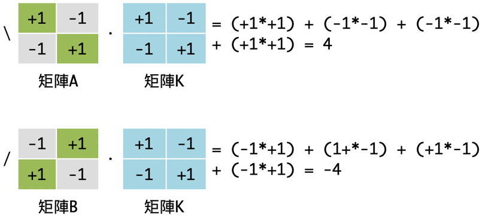
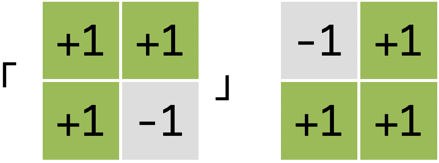
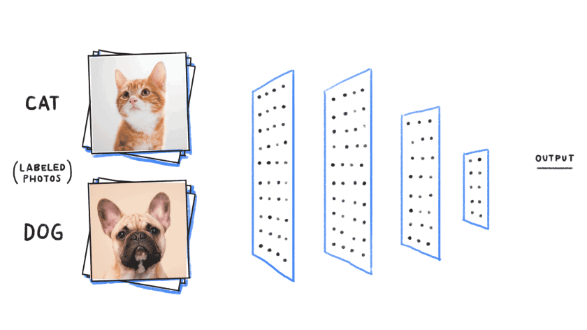
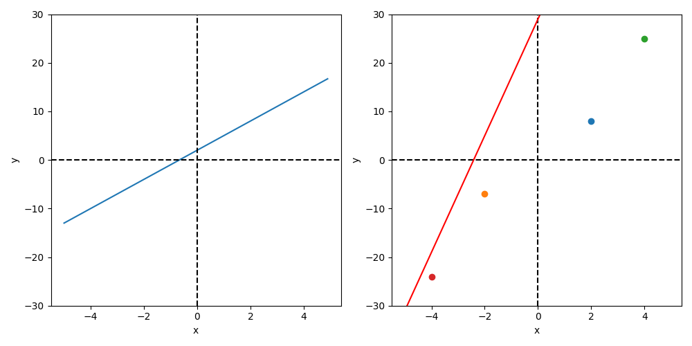
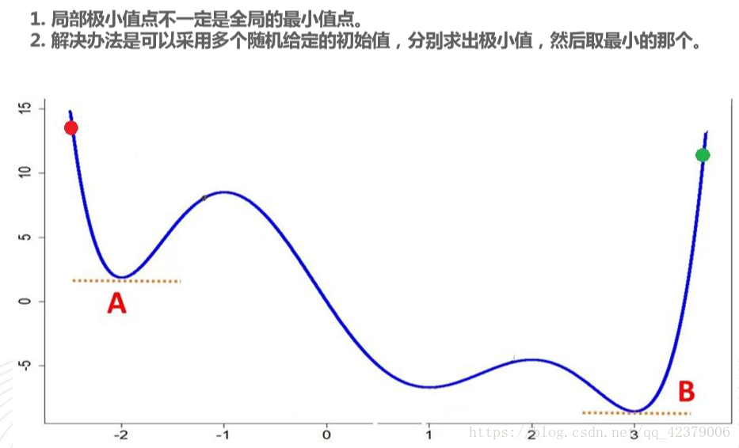
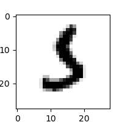
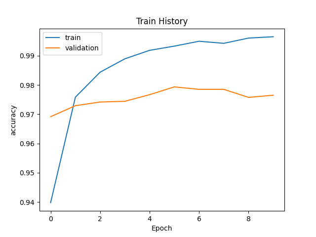
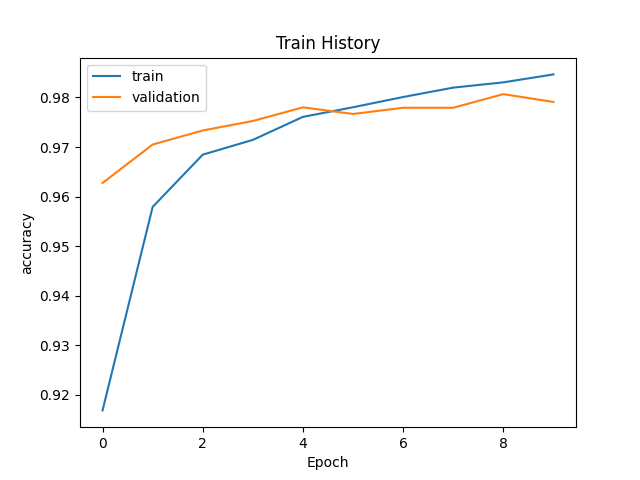
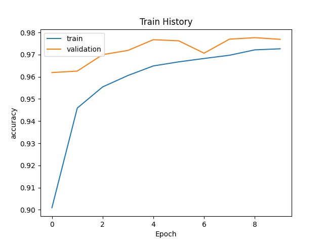
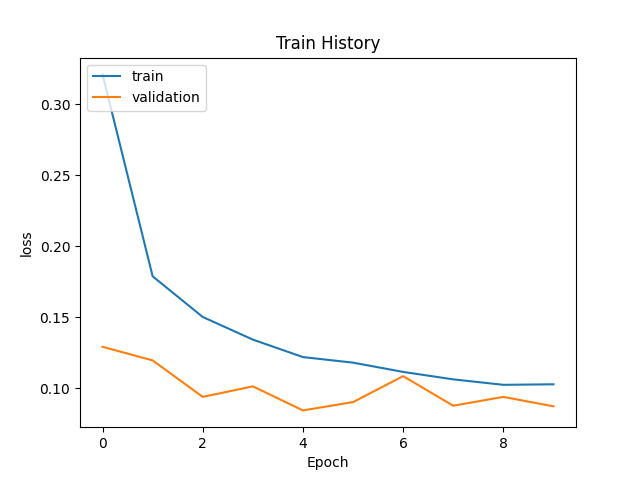

神經網路
Table of Contents

1. How machine recognize image
Figure 1: 貓狗特徵如何區別
機器是如何能區分貓狗的圖片？現在這似乎是個十分尋常簡單的能力，就和電腦能計算加減乘除那樣。然而在機器學習成熟前，這卻是個十分困難的問題。在回答這個問題之前，我們先來看一個更簡單的圖形識別問題：讓電腦來讀入「／」及「＼」兩個圖像並進行識別。
1.1. 「／」v.s.「＼」
1.2. 將待解問題數學化
在繼續做夢之前，讓我們回到現實，怎麼找出這個函數：
Figure 2: 目標函數
如何藉由數學運算來將上述兩個矩陣區分為「／」及「＼」兩個圖像？似乎把矩陣裡的數值進行相加或相乘都無法達到要求，因為兩個矩陣元素相加或相乘的結果都相同。顯然我們需要引入額外的變數來協助：加入另一個新的矩陣來與這兩個矩陣進行運算。
經由如下的矩陣計算，我們可以初步擬定一條分類規則：若是運算所得值大於0，則此圖像為＼；若是運算所得值小於0，則判定為／。

然而，若是電腦所讀入的「／」及「＼」兩符號書寫過於潦草，那麼我們的判斷是否仍然正確呢？假設所讀入的「＼」圖像在右上角的彎曲幅度過大，以致於佔去了三個像素（如下圖矩陣A）；而「／」圖像又因寫的太短，僅佔了左下角一個像素（如下圖矩陣B）。經由如下的計算結果，我們發現仍可將二者進行正確分類。此時，我們可以宣稱這個方法是強韌的(robust)。
在上述範例中：
- 矩陣K對矩陣A、B所進行的運算即為卷積(convolution)，矩陣K在卷積神經網路中稱之為卷積核(convolution kernel)，其作用即在於萃取出資料特徵。藉此，我們達成了利用數學運算來擷取圖像特徵，也可以理解到為何深度學習能夠過濾資料雜訊而完成圖像識別。
- 計算得到結果後，我們私自擬定一條分類規則：若是運算所得值大於0，則此圖像為＼；若是運算所得值小於0，則判定為／。在神經網路中，這就是激勵函數(Activation Function)。
至此，你有沒有一種Déjà vu的感覺？沒錯，我們實作出了一個感知器(如圖3)：
- 矩陣A就是感知器的輸入值
- 矩陣K裡的值就是感知器中的weight和bias
- 決定何時輸出“\”、何時輸出“\”的功能其實就是激勵函數
Figure 3: 感知器基本結構
而感知器只是神經網路中的基本元素。
1.3. [課堂作業]如何辨識「及」 TNFSH
思考一下，如果你想要區分「及」兩個符號(如右圖)，你要如何訂制你的卷積核？你的方法夠強韌嗎？

2. 照片分類任務的兩個難題
2.1. 缺乏可用特徵值
回顧監督式學習中的分類任務中，我們為每張照片中的動物手動定義了不同的特徵，並賦予不同動物不同數值，最後利用這些特徵值來進行分類預測。

就連在KNN分類器:IRIS的任務中，鳶尾花的資料集也是友善的自帶花萼和花瓣資料才來要求我們完成分類工作。

但是，如果我們要辨別的是全新的照片呢？難道我們要進行下圖這種分類時都要手動生成相對應的特徵？所以在輸入照片後還要再手動丈量所需特徵值(頭部及尾巴佔身體比例)？如果是，這種能力也太廢了點。
至此我們發現了真正要實作照片辨識時的第一個問題：缺乏特徵值。
2.2. 缺乏適當參數
在How machine recognize image一節中，我們想出了利用另一個新矩陣K來從兩張影像的矩陣抽取出特徵。
如果你有認真做完[課堂作業]如何辨識「及」，你大概會發現這個矩陣K並不是那麼好踹出來的，而且我們花了這麼多精力踹出一個矩陣也只能抽取出原圖的一個特徵，難道這就是機器學習的玩法？
3. 類神經網路
3.1. 概念
類神經網路的機制解決了前述兩大問題，方法是效法人類腦神經系統的運作。
在生物神經系統的結構中，神經元(Neuron)之間互相連結，由外部神經元接收信號，再逐層傳導至其他神經元，最後作出反應。
Figure 4: 神經元與神經網路
類神經網絡是一種機器學習機制，它模仿人類大腦的學習方法。人類的大腦從外界接受刺激，並處理這些輸入（通過神經元處理），最終產生輸出1。當任務變得複雜的時候，大腦會使用多個神經元來形成一個複雜的網絡，並在神經元之間傳遞訊息，人工神經網絡就是模仿這種處理機制的一種算法。
圖5為典型的三層類神經網路，輸入層(layer 0)有 2 個神經元，兩個隱藏層(layer 1, layer 2)各有3個(a1, a2, a3)及2個(b1, b2)神經元(灰色圓圈為bias)，輸出層(layer 3)則有兩個神經元。
Figure 5: 三層神經網路
神經網絡的基礎模型是感知器(perceptron)，因此神經網絡也可以叫做多層感知機(Multi-layer Perceptron)，簡稱MLP2。
我們可以把圖5中的每個神經元都視為一個抽象的感知器實作，如圖6，每個神經元都自前方取得輸入資料，經過一番計算後，再將輸出結果傳結後方的神經元，當成後方神經元的輸入。這種訊息在神經網路中傳遞的方式稱為前向傳播(forward propagation)，而實際神經網路中各層的神經元的訊息傳遞則是透過矩陣相乘來進行。

Figure 6: 神經元/感知器
3.2. 解決第一個問題
如前所述，一個感知器可以抽取出一份輸入資料的特徵值，那麼，再看一下圖5中的forward propagation
- 第0層(layer 0)裡的兩個神經元(x1, x2)在取得原始資料後，就能抽取出其中的兩項特徵值，而這兩項特徵值就當成(layer 2)的輸入來源
- 第1層(layer 1)裡的三個神經元(a1, a2, a3)則可抽取出來源資料的三項特徵值(可視為更高階或更抽象的特徵)，而這三項特徵值再當成layer 2的輸入
- 第2層(layer 2)裡面的兩個神經元(b1, b2)繼續抽取出更抽象的兩項特徵值經過計算送往layer 3
- 第3層(layer 3)在收到layer 2傳來的結果後，經過內部運算並輸出預測結果。

Figure 7: Forward propagation
藉由這樣的設計，在進行照片分類時，如果我們在每一層都塞入512個神經元，那光是透過第一層就能由每張照片中抽取出512種不同特徵值了，如此就解決了我們面臨的第一個問題：缺乏可用特徵值。
3.3. 解決第二個問題
然而如果事情有這麼簡單，機器學習也不至於在1970年代邁入寒冬。還記得[課堂作業]如何辨識「及」吧，裡面只有一個要處理的矩陣K，一共只有4個要踹出來的數值，想像一下有512個神經元，裡面有512個矩陣K，每個矩陣也不用太大，只要3×3就好(9個參數)，那光第一層我們就要處理多少參數呢…顯然，要踹出合適的所有參數值不是人力所能及的工作。
神經網路解決這個問題的方式非常的率性且不負責任：隨機!!
是的，就如同考試時你面對陌生選擇題的反應，神經網路也決定這麼幹，隨便丟一些數值填到矩陣中當成第一批參數。事實上，同樣的策略我們在線性迴歸:年齡身高預測/隨機的力量裡已經玩過了，當初在找出方程式的最佳參數組合時，我們也是閉上眼睛隨便選一組。不管整個網路中有多少參數，當我們隨機設定好了所有參數的最初值後，整個神經網就就可以運作了，嗯…至少已經可以依照前向傳播的流程輸出第一個預測結果了，你看，我們已經朝完美的人工智慧跨近一大步了-_-

接下來的流程其實和迴歸有點類似，我們評估預測結果的品質，然後回頭修正參數，只是這次的工程有點浩大，我們要修正所有的參數，這個回頭修正所有參數的過程稱為反向傳播(backward propagation)。
Figure 8: Back Propagation
第一次以隨機設定的參數跑出來的結果肯定是慘不忍睹的，因為它的原則就是「有就好」，就好像某些政黨在成立之初找不到信徒，所以什麼殺人犯或貪污犯，只要你肯入黨就照單全收，因為只要親近黨主席，這些人最終都會變成好人。
好吧，扯遠了，反正神經網路的第一輪預測品質基本上就是瞎猜，不過沒關係，就像我們在迴歸裡做的事一樣，我們每次都會評估預測品質，在這裡我們用損失函數(lost function, 也就是圖8裡的cost function, J)來評估預測品質，當評估結果未達標準，我們就回頭修正參數。在迴歸這一章保持距離以測安全裡的例子裡，我們只要修正一個參數(\(\hat{y} = w * x\) 裡的\(w\))，用的方法是找出參數的切線斜率，決定修正方向。二者的最終目標其實是一樣的：讓預測誤差達到最小化。

Figure 9: 決定w應往哪個方向移動
面對動軏成升上萬的參數，神經網路採用「隨機梯度下降法（Stochastic Gradient Descent，SGD）」來找出各個參數的梯度(我們可以先把它當成前例中的切線斜率)，然後沿著梯度方向修正各個參數，從最後一層反向修正回到第一層(就是反向傳播在做的事)，於是我們就有了第二個版本的參數值了(第一個版本就是隨機指定的)。
然後呢?就再從頭玩一次啊：以一批原始資料(圖片)當成輸入再跑一次正向傳播，得到預測、評估預測品質、再反向傳播回去修正所有參數，得到第三個版本的參數值…，只要你時間夠多，你可以一直玩下去，這就是神經網路學習的奧義了…
什麼？你問「隨機梯度下降法」原理？這個等我學完偏微分以後再解釋給你聽….QQ
3.4. 神經網路如何學習(正經版)
3.4.1. 基本步驟
利用隨機梯度下降法(SGD)求梯度並更新 weight 和 bias 參數
- 從訓練資料中隨機選擇一部分資料
- 利用前向傳播，求出預測的輸出值，以損失函數(loss Function)計算預測值與真實答案(label)的誤差，再利用用反向傳播方法，求各參數的梯度。
- 將所有權重參數沿其各自的梯度方向進行微小更新
- 重複以上步驟(epoch=100, 500, 1000, …)直到誤差最小化
(http://www.feiguyunai.com/index.php/2019/03/31/python-ml-24th-backp/)
3.4.2. Error Function
也就是loss function，依不同的資料型別各有遉用的loss function。典型的計算方式如下：
Error(錯誤) = 真正的值(t) + 預測值(y)
- \(E=\frac{1}{2}\sum^{n}_{i=1}(y_i = t_i)^2\)
- \(E=-\sum_{i=1}^{n}t_i*\log{y_i}\)
3.4.3. 學習步驟

Figure 10: 類神經網路
以上面這個簡化版的神經元為例：
- 隨機指定weight與bias的值。
- 計算出模型結果值
計算出誤差：即計算結果與真實值之差異
Figure 11: 類神經網路
- 定義 weight 與 bias 的更新策略(update the weights and bias)，其更新策略為從錯誤中學習。學習規則為
- \(\Delta w=\eta X^T (\hat{y} - y)\): \(w\)(新的)=\(w\)(前一回)+\(\Delta w\)(誤差變動)
- \(\Delta b=\eta (\hat{y} - y)\): \(b\)(新的)=\(b\)(前靣)+\(\Delta b\)(誤差變動)
- \(\eta\) = 學習率
- \(\Delta w=\eta X^T (\hat{y} - y)\): \(w\)(新的)=\(w\)(前一回)+\(\Delta w\)(誤差變動)
使用新的 weight 與 bias，計算直到誤差很小(定義何時結束)

Figure 12: 類神經網路
3.5. 神經網路的輸出層
神經網路可以用來解決分類問題與迴歸問題，端視輸出層所使用的活化函數，解決迴歸問題時使用恆等函數，而分類問題則使用 softmax 函數 。恆等函數對於輸入的內容完全不做任何處理，直接輸出，其神經網路的結構如圖13所示。
Figure 13: 恆等函數神經網路圖
而分類問題使用的 softmax 函數則如公式\eqref{orgdcfc229}所示，\(exp(x)\)為代表\(e^x\)的指標函數，輸出層有 n 個節點，而每個節點收到的訊息\(y_k\)來自前一層以箭頭連接的所有訊號輸入，由公式\eqref{orgdcfc229}的分母也可以看出，輸出的各個神經元會依以「依各節點訊號量比例」的模式影響下一層的輸入。

Figure 14: softmax 函數神經網路圖
至於 softmax 的 python 實作則如下程式碼所示，為了避免因矩陣 a 的值過大而導至指數函數運算出現溢位，程式碼第4行的內容也可以改由第5行替代。
1: #python code for softmax funtion 2: import numpy as np 3: def softmax(a): 4: exp_a = np.exp(a) 5: #exp_a = np.exp(a - np.max(a)) 6: sum_exp_a = np.sum(exp_a) 7: y = exp_a / sum_exp_a 8: return(y) 9: a = np.array([0.3, 2.9, 4.0]) 10: print(softmax(a))
[0.01821127 0.24519181 0.73659691]
3.5.1. softmax 函數的特色
softmaxe 的輸出為介於 0 到 1 間的實數，此外，其輸出總和為 1，這個性質使的 softmax 函數的輸出也可解釋為「機率」。例如，前節程式碼的輸出結果為[0.01821127 0.24519181 0.73659691]，從以機率的角度我們可以說：分類的結果有 1.8%的機率為第 0 類；有 24.52%的機率為第 1 類；有 73.66%的機率為第 2 類。換言之，使用 softmax 函數可以針對問題提出對應的機率。
softmax 函數的另一個特色是其輸出結果仍保持與輸入訊息一致的大小關係，這是因為指數函數\(y=exp(x)\)為單週函數。一般而言，神經網路會把輸出最大神經元的類別當作辨識結果，然而，因為 softmax 不影響大小順序，所以一般會省略 softmax 函數。
輸出層的節點數量取決於要解決的問題，例如，如果要解決的問題為「判斷一個手寫數字的結果」，則輸出層會有 10 個節點(分別代表 0~9)，而輸出訊息最大的結點則為最有可能的答案類別。
4. 深度神經網路(DNN)
深度神經網路(Deep Neural Network, DNN)，顧名思義就是有很多層的神經網路。然而，幾層才算是多呢？一般來說有1-2個隱藏層的神經網絡就可以叫做多層，準確的說是(淺層)神經網絡(Shallow Neural Networks)。隨著隱藏層的增多，更深的神經網絡(一般來說超過3層)就都叫做深度神經網路2。而那些以深度神經網路為模型的機器學習就是我們耳熟能詳的深度學習。
4.1. 學習與參數:以迴歸問題為例
想像一個國中的數學問題：在平面上畫出\(y=2x+3\)的直線，如圖15左的直線(\(y=ax+b\))，決定這條直線的因素有二：斜率\(a\)與截距\(b\)，這兩項因素即可視為該直線的參數，像這種由已知參數去畫出對映直線的問題稱之為順向問題；反之，如果目前只知道平面上有幾個點，希望能畫出最符合的這些點的線，這種問題就稱為逆向問題。像圖15右圖的紅線明顯就不是一條最符合的線，而解決這個問題就變成透過「尋找最佳參數」來畫出最理想的迴歸線，神經網路便是希望能藉由網路模型的不斷學習來找出最佳參數。

Figure 15: 由已知函數畫出直線與由已知點找未知函數
同理，如果我們將解題目標改變為「預測學生學測總級分」，那麼，我們得先了解有那些因素會影響學生的學測成績，初步估計也許包括以下因素：
- 上課狀況
- 是否認真寫作業
- 歷次段考成績
- 校內模考成績
- 回家後是否努力讀書
- 是否沉迷網路遊戲或手機遊戲
- 是否有男/女朋友
此時，我們的預測模型就如圖16所示

Figure 16: 學測成績預測模型#1
然而，上述因素只是一般性的文字描述，畢竟過於模糊而無法對之進行精確計算，所以，我們有必要再對其進行更精確的描述，此處的參數（即影響因素及相對權重）又稱為特徵值。此外，每個因素影響學測結果的程度理應會有所差異，因此也有必要對各因素賦予「加權」（也稱為權重），詳細考慮後的因素及加權列表如下。
| no | 因素編號 | 模糊描述 | 精確描述 | 權重 |
|---|---|---|---|---|
| 1 | \(x_1\) | 上課狀況 | 平均每次上課時認真聽講的時間百分比 | \(w_1\) |
| 2 | \(x_2\) | 是否認真寫作業 | 作業平均成績 | \(w_2\) |
| 3 | \(x_3\) | 歷次段考成績 | 各科段考平均成績 | \(w_3\) |
| 4 | \(x_4\) | 校內模考成績 | 歷次模考平均成績 | \(w_4\) |
| 5 | \(x_5\) | 放學後是否努力讀書 | 放學後花在課業上的時間 | \(w_5\) |
| 6 | \(x_6\) | 是否沉迷網路遊戲或手機遊戲 | 每天平均花在遊戲的時間 | \(w_6\) |
| 7 | \(x_7\) | 是否花太多時間交異性朋友 | 有/無男女朋友 | \(w_7\) |
此時，我們的預測模型就如圖17所示，換言之，是在解一個\(f(x)=x_1*w_1+x_2*w_2+x_3*w_3+...+x_7*w_7\)的函式問題。我們可以先針對這些特徵值對學生進行問卷調查，並追踪學生的學測成績，最後將取得的大量的特徵值輸入到到我們的函數模型（圖17）中，觀察計算結果與實際資料的吻合程度，藉由不斷的調整參數（權重）來控制函數，讓輸出的計算結果與實際答案完全吻合，以便求得最準確的函數。

Figure 17: 學測成績預測模型#2
然而，無論我們事前研究分析調查的再如何嚴謹，實際的計算結果與真實分數總會存在誤差，如表2，分別觀察這些誤差值並不容易看出吻合程度，但如果將個別的誤差平方後加總，則可以得到一個明確的誤差函數=\(3^2+(-3)^2+(-2)^2+(-2)^2...\)，至此，解題的任務便轉為：找出能讓誤差函數最小化的一組參數。
| 學生 A | 學生 B | 學生 C | 學生 D | … | |
|---|---|---|---|---|---|
| 資料 | 70 | 65 | 68 | 50 | … |
| 模型 | 67 | 68 | 70 | 52 | … |
| 誤差 | 3 | -3 | -2 | -2 | … |
4.2. 如何調整參數
前節提及，為了能找到最理想的預測函數，我們可以不斷調整權重來把誤差函數降到最低。實務上，我們可以每次以最細微的調幅逐一調整（增加或減少）權重值來試圖減小損失函數，直到其無法再減少為止，此種方式稱為「坡度法」，而這種每次稍微調整一點點再觀察結果變化的手段稱為微分；若是同時微幅調整所有權重以將損失函數降到最低，這種方式則稱為「梯度下降法」。然而類似梯度法並不保證能找到將損失函數降到最小的權重組合，如圖18所示，以梯度法可能只會找到 A 點這個局部最小值，然而全體的最小值其實發生在 B 點。

Figure 18: 極小值與最小值的差異
4.3. 模型的極限
在我們透過問卷取得大量的數據後，想像一下我們以這些數據來做為調整模型參數的依據，最後，我們如何評估這個模型的效能呢？一般來說，我們會把數據分成兩部份：
- 訓練資料: 用來給模型(神經網路)調整或學習參數
- 測試資料: 用來給模型(神經網路)測試或檢驗模型的效能。
之所以用不同的數據進行訓練與測試，是為了避免「過擬合」的狀況，即，因為測試資料與訓練資料一致，導致測試結果十分完美，然而，一旦把模型拿來應用到新的數據上（或是實際應用模型到真實世界中）時，反而效果會不如預期。
過擬合就好比學生在學習時只死記課本的習題，對於其他題型完全不予理會，如果考試也考課本的習題，考試成績自然優異，然而如果考試時題型略做變化，則考試結果就可能十分悲慘。
實際進行測試時，可以將資料分成數組，將其中一組當成測試資料。例如，分為A、B、C、D 4組，然後輪流拿這4組資料中的一組做為測試資料進行 4 次相同的測試，目的在於提升模型的「泛化能力」，也就是減少其過擬合的可能性。
4.4. 神經網路為什麼要有那麼多層
前節提及，我們的預測模型就如圖17所示，換言之，是在解一個\(f(x)=x_1*w_1+x_2*w_2+x_3*w_3+...+x_7*w_7\)的函式問題，那麼，為了能找到最理想的預測函數，可否把函數變的更加複雜，例如，將函數變為二次函數或更複雜的函數以提升預測的精準度？實則，這種社會科學的問題並不如自然科學的物理現象可以用明確的公式來解決，神經網路採用的是以組合的方式來將函數複雜化，例如，把圖17變為下圖的樣式，如此藉由改變各因素以及權值的組合，等於建立了許多新的特徵值，也增加了模型的複雜度。

Figure 19: 學測成績預測模型#3
然而，如果只是以這種「新增特徵值組合與權重」進而產生新特徵值的方式來改變模型，那麼，再多的層數也能合併為一層，因為這些運算方式均屬於線性轉換，為了有效讓模型更加複雜，此處可以在模型中加入非線性轉換，如圖20中的ReLU激勵函數，其結果如圖21所示。

Figure 20: ReLU 函數圖

Figure 21: 學測成績預測模型#4
5. DNN實作: 辨識手寫數字
使用神經網路解決問題分為兩個步驟：「學習」與「推論」，學習指使用訓練資料進行權重參數的學習；而推論指使用學習過的參數進行資料分類。
MNIST 是機器學習領域中相當著名的資料集，號稱機器學習領域的「Hello world.」，其重要性不言可喻。MNIST 資料集由 0~9 的數字影像構成(如圖22)，共計 60000 張訓練影像、10000 張測試影像。一般的 MMIST 資料集的用法為：使用訓練影像進行學習，再利用學習後的模型預測能否正確分類測試影像。

Figure 22: MNIST 資料集內容範例
5.1. Keras
此處以最簡單的 DNN (deep neural network) 作為範例。以 Keras 的核心為模型，應用最常使用 Sequential 模型。藉由.add()我們可以一層一層的將神經網路疊起。在每一層之中我們只需要簡單的設定每層的大小(units)與激活函數(activation function)。需要特別記得的是：第一層要記得寫輸入的向量大小、最後一層的 units 要等於輸出的向量大小。在這邊我們最後一層使用的激活函數(activation function)為 softmax。
相對應程式碼如下：
# 載入資料 from keras.datasets import mnist from keras.utils import to_categorical def load_data(): # 載入minst的資料 (x_train, y_train), (x_test, y_test) = mnist.load_data() # 將圖片轉換為一個60000*784的向量，並且標準化 x_train = x_train.reshape(x_train.shape[0], 28*28) x_test = x_test.reshape(x_test.shape[0], 28*28) x_train = x_train.astype('float32') x_test = x_test.astype('float32') x_train = x_train/255 x_test = x_test/255 # 將y轉換成one-hot encoding y_train = to_ctaegorical(y_train, 10) y_test = to_categorical(y_test, 10) # 回傳處理完的資料 return (x_train, y_train), (x_test, y_test) import numpy as np from keras.layers import Dense, Activation, Dropout, Reshape, Permute from keras.models import Sequential from keras.optimizers import Adam def build_model():#建立模型 model = Sequential() #將模型疊起 model.add(Dense(input_dim=28*28,units=500,activation='relu')) model.add(Dense(units=500,activation='relu')) model.add(Dense(units=500,activation='relu')) model.add(Dense(units=10,activation='softmax')) model.summary() return model # 開始訓練模型，此處使用了Adam做為我們的優化器，loss function選用了categorical_crossentropy。 (x_train, y_train), (x_test, y_test) = load_data() model = build_model() #開始訓練模型 model.compile(loss='categorical_crossentropy',optimizer="adam",metrics=['accuracy']) model.fit(x_train,y_train,batch_size=1000,epochs=20) #顯示訓練結果 score = model.evaluate(x_train,y_train) print ('\nTrain Acc:', score[1]) score = model.evaluate(x_test,y_test) print ('\nTest Acc:', score[1])
_________________________________________________________________ Layer (type) Output Shape Param # ================================================================= dense_1 (Dense) (None, 500) 392500 _________________________________________________________________ dense_2 (Dense) (None, 500) 250500 _________________________________________________________________ dense_3 (Dense) (None, 500) 250500 _________________________________________________________________ dense_4 (Dense) (None, 10) 5010 ================================================================= Total params: 898,510 Trainable params: 898,510 Non-trainable params: 0 _________________________________________________________________ Epoch 1/20 100/60000 [..............................] - ETA: 2:55 - loss: 2.2917 - acc: 0.1300 800/60000 [..............................] - ETA: 25s - loss: 1.6424 - ACM: 0.5362 ....... 16300/60000 [=======>......................] - ETA: 4s - loss: 0.3752 - acc: 0.8898 17000/60000 [=======>......................] - ETA: 4s - loss: 0.3681 - acc: 0.8916 ....... 50600/60000 [========================>.....] - ETA: 0s - loss: 0.2232 - acc: 0.9335 51300/60000 [========================>.....] - ETA: 0s - loss: 0.2220 - acc: 0.9338 ....... 59700/60000 [============================>.] - ETA: 0s - loss: 0.2078 - acc: 0.9377 60000/60000 [==============================] - 5s 81us/step - loss: 0.2074 - acc: 0.9379 Epoch 2/20 100/60000 [..............................] - ETA: 5s - loss: 0.0702 - acc: 0.9800 ...... 60000/60000 [==============================] - 5s 77us/step - loss: 0.0832 - acc: 0.9740 Epoch 3/20 ...... Epoch 29/20 32/60000 [..............................] - ETA: 1:10 1440/60000 [..............................] - ETA: 3s ...... 58496/60000 [============================>.] - ETA: 0s 60000/60000 [==============================] - 2s 34us/step Train Acc: 0.9981666666666666 32/10000 [..............................] - ETA: 0s 1568/10000 [===>..........................] - ETA: 0s 3104/10000 [========>.....................] - ETA: 0s 4640/10000 [============>.................] - ETA: 0s 6176/10000 [=================>............] - ETA: 0s 7680/10000 [======================>.......] - ETA: 0s 9184/10000 [==========================>...] - ETA: 0s 10000/10000 [==============================] - 0s 33us/step Test Acc: 0.9823
5.2. Python手刻
5.2.1. 準備 MNIST 資料
準備資料是訓練模型的第一步，基礎資料可以是網上公開的資料集，也可以是自己的資料集。視覺、語音、語言等各種型別的資料在網上都能找到相應的資料集。
MNIST 數據集來自美國國家標準與技術研究所, National Institute of Standards and Technology (NIST). 訓練集 (training set) 由來自 250 個不同人手寫的數字構成, 其中 50% 是高中學生, 50% 來自人口普查局 (the Census Bureau) 的工作人員. 測試集(test set) 也是同樣比例的手寫數字數據。MNIST 數據集可在 http://yann.lecun.com/exdb/mnist/ 獲取, 它包含了四個部分:
- Training set images: train-images-idx3-ubyte.gz (9.9 MB, 解壓後 47 MB, 包含 60,000 個樣本)
- Training set labels: train-labels-idx1-ubyte.gz (29 KB, 解壓後 60 KB, 包含 60,000 個標籤)
- Test set images: t10k-images-idx3-ubyte.gz (1.6 MB, 解壓後 7.8 MB, 包含 10,000 個樣本)
- Test set labels: t10k-labels-idx1-ubyte.gz (5KB, 解壓後 10 KB, 包含 10,000 個標籤)
MNIST 資料集是一個適合拿來當作 TensotFlow 的練習素材，在 Tensorflow 的現有套件中，也已經有內建好的 MNIST 資料集，我們只要在安裝好 TensorFlow 的 Python 環境中執行以下程式碼，即可將 MNIST 資料成功讀取進來。.
1: import tensorflow as tf 2: mnist = tf.keras.datasets.mnist 3: (x_train, y_train), (x_test, y_test) = mnist.load_data()
在訓練模型之前，需要將樣本資料劃分為訓練集、測試集，有些情況下還會劃分為訓練集、測試集、驗證集。由上述程式第3行可知，下載後的 MNIST 資料分成訓練資料(training data)與測試資料(testing data)，其中 x 為圖片、y為所對應數字。
1: import tensorflow as tf 2: mnist = tf.keras.datasets.mnist 3: (x_train, y_train), (x_test, y_test) = mnist.load_data() 4: # ===================================== 5: # 判斷資料形狀 6: print(x_train.shape) 7: print(x_test.shape) 8: # 第一個label的內容 9: print(y_train[0]) 10: # 顯示影像內容 11: import matplotlib.pylab as plt 12: img = x_train[0] 13: plt.imshow(img) 14: plt.savefig("MNIST-Image.png")
(60000, 28, 28) (10000, 28, 28) 5
由上述程式輸出結果可以看到載入的 x 為大小為 28*28 的圖片共 60000 張，每一筆 MNIST 資料的照片(x)由 784 個 pixels 組成（28*28），照片內容如圖23，訓練集的標籤(y)則為其對應的數字(0～9)，此例為 5。

Figure 23: MNIST 影像示例
x 的影像資料為灰階影像，每個像素的數值介於 0~255 之間，矩陣裡每一項的資料則是代表每個 pixel 顏色深淺的數值，如下圖24所示：

Figure 24: MNIST 資料矩陣
載入的 y 為所對應的數字 0~9，在這我們要運用 keras 中的 np_utils.to_categorical 將 y 轉成 one-hot 的形式，將他轉為一個 10 維的 vector，例如：我們所拿到的資料為 y=3，經過 np_utils.to_categorical，會轉換為 y=[0,0,0,1,0,0,0,0,0,0]。這部份的轉換程式碼如下：
1: from keras.datasets import mnist 2: from keras.utils import to_categorical 3: 4: import tensorflow as tf 5: mnist = tf.keras.datasets.mnist 6: (x_train, y_train), (x_test, y_test) = mnist.load_data() 7: # ===================================== 8: # 將圖片轉換為一個60000*784的向量，並且標準化 9: x_train = x_train.reshape(x_train.shape[0], 28*28) 10: x_test = x_test.reshape(x_test.shape[0], 28*28) 11: x_train = x_train.astype('float32') 12: x_test = x_test.astype('float32') 13: x_train = x_train/255 14: x_test = x_test/255 15: # 將y轉換成one-hot encoding 16: y_train = to_categorical(y_train, 10) 17: y_test = to_categorical(y_test, 10) 18: # 回傳處理完的資料 19: print(y_train[0]) 20: 21: import numpy as np 22: np.set_printoptions(precision=2, linewidth=np.inf) 23: print(x_train[0].reshape(28, 28))
[0. 0. 0. 0. 0. 1. 0. 0. 0. 0.] [[0. 0. 0. 0. 0. 0. 0. 0. 0. 0. 0. 0. 0. 0. 0. 0. 0. 0. 0. 0. 0. 0. 0. 0. 0. 0. 0. 0. ] [0. 0. 0. 0. 0. 0. 0. 0. 0. 0. 0. 0. 0. 0. 0. 0. 0. 0. 0. 0. 0. 0. 0. 0. 0. 0. 0. 0. ] [0. 0. 0. 0. 0. 0. 0. 0. 0. 0. 0. 0. 0. 0. 0. 0. 0. 0. 0. 0. 0. 0. 0. 0. 0. 0. 0. 0. ] [0. 0. 0. 0. 0. 0. 0. 0. 0. 0. 0. 0. 0. 0. 0. 0. 0. 0. 0. 0. 0. 0. 0. 0. 0. 0. 0. 0. ] [0. 0. 0. 0. 0. 0. 0. 0. 0. 0. 0. 0. 0. 0. 0. 0. 0. 0. 0. 0. 0. 0. 0. 0. 0. 0. 0. 0. ] [0. 0. 0. 0. 0. 0. 0. 0. 0. 0. 0. 0. 0.01 0.07 0.07 0.07 0.49 0.53 0.69 0.1 0.65 1. 0.97 0.5 0. 0. 0. 0. ] [0. 0. 0. 0. 0. 0. 0. 0. 0.12 0.14 0.37 0.6 0.67 0.99 0.99 0.99 0.99 0.99 0.88 0.67 0.99 0.95 0.76 0.25 0. 0. 0. 0. ] [0. 0. 0. 0. 0. 0. 0. 0.19 0.93 0.99 0.99 0.99 0.99 0.99 0.99 0.99 0.99 0.98 0.36 0.32 0.32 0.22 0.15 0. 0. 0. 0. 0. ] [0. 0. 0. 0. 0. 0. 0. 0.07 0.86 0.99 0.99 0.99 0.99 0.99 0.78 0.71 0.97 0.95 0. 0. 0. 0. 0. 0. 0. 0. 0. 0. ] [0. 0. 0. 0. 0. 0. 0. 0. 0.31 0.61 0.42 0.99 0.99 0.8 0.04 0. 0.17 0.6 0. 0. 0. 0. 0. 0. 0. 0. 0. 0. ] [0. 0. 0. 0. 0. 0. 0. 0. 0. 0.05 0. 0.6 0.99 0.35 0. 0. 0. 0. 0. 0. 0. 0. 0. 0. 0. 0. 0. 0. ] [0. 0. 0. 0. 0. 0. 0. 0. 0. 0. 0. 0.55 0.99 0.75 0.01 0. 0. 0. 0. 0. 0. 0. 0. 0. 0. 0. 0. 0. ] [0. 0. 0. 0. 0. 0. 0. 0. 0. 0. 0. 0.04 0.75 0.99 0.27 0. 0. 0. 0. 0. 0. 0. 0. 0. 0. 0. 0. 0. ] [0. 0. 0. 0. 0. 0. 0. 0. 0. 0. 0. 0. 0.14 0.95 0.88 0.63 0.42 0. 0. 0. 0. 0. 0. 0. 0. 0. 0. 0. ] [0. 0. 0. 0. 0. 0. 0. 0. 0. 0. 0. 0. 0. 0.32 0.94 0.99 0.99 0.47 0.1 0. 0. 0. 0. 0. 0. 0. 0. 0. ] [0. 0. 0. 0. 0. 0. 0. 0. 0. 0. 0. 0. 0. 0. 0.18 0.73 0.99 0.99 0.59 0.11 0. 0. 0. 0. 0. 0. 0. 0. ] [0. 0. 0. 0. 0. 0. 0. 0. 0. 0. 0. 0. 0. 0. 0. 0.06 0.36 0.99 0.99 0.73 0. 0. 0. 0. 0. 0. 0. 0. ] [0. 0. 0. 0. 0. 0. 0. 0. 0. 0. 0. 0. 0. 0. 0. 0. 0. 0.98 0.99 0.98 0.25 0. 0. 0. 0. 0. 0. 0. ] [0. 0. 0. 0. 0. 0. 0. 0. 0. 0. 0. 0. 0. 0. 0.18 0.51 0.72 0.99 0.99 0.81 0.01 0. 0. 0. 0. 0. 0. 0. ] [0. 0. 0. 0. 0. 0. 0. 0. 0. 0. 0. 0. 0.15 0.58 0.9 0.99 0.99 0.99 0.98 0.71 0. 0. 0. 0. 0. 0. 0. 0. ] [0. 0. 0. 0. 0. 0. 0. 0. 0. 0. 0.09 0.45 0.87 0.99 0.99 0.99 0.99 0.79 0.31 0. 0. 0. 0. 0. 0. 0. 0. 0. ] [0. 0. 0. 0. 0. 0. 0. 0. 0.09 0.26 0.84 0.99 0.99 0.99 0.99 0.78 0.32 0.01 0. 0. 0. 0. 0. 0. 0. 0. 0. 0. ] [0. 0. 0. 0. 0. 0. 0.07 0.67 0.86 0.99 0.99 0.99 0.99 0.76 0.31 0.04 0. 0. 0. 0. 0. 0. 0. 0. 0. 0. 0. 0. ] [0. 0. 0. 0. 0.22 0.67 0.89 0.99 0.99 0.99 0.99 0.96 0.52 0.04 0. 0. 0. 0. 0. 0. 0. 0. 0. 0. 0. 0. 0. 0. ] [0. 0. 0. 0. 0.53 0.99 0.99 0.99 0.83 0.53 0.52 0.06 0. 0. 0. 0. 0. 0. 0. 0. 0. 0. 0. 0. 0. 0. 0. 0. ] [0. 0. 0. 0. 0. 0. 0. 0. 0. 0. 0. 0. 0. 0. 0. 0. 0. 0. 0. 0. 0. 0. 0. 0. 0. 0. 0. 0. ] [0. 0. 0. 0. 0. 0. 0. 0. 0. 0. 0. 0. 0. 0. 0. 0. 0. 0. 0. 0. 0. 0. 0. 0. 0. 0. 0. 0. ] [0. 0. 0. 0. 0. 0. 0. 0. 0. 0. 0. 0. 0. 0. 0. 0. 0. 0. 0. 0. 0. 0. 0. 0. 0. 0. 0. 0. ]]
5.2.2. MNIST 的推論處理
如圖25所示，MNIST 的推論神經網路最前端的輸入層有 784 (\(28*28=784\))個神經元，最後的輸出端有 10 個神經元(\(0~9\)個數字)，至於中間的隠藏層有兩個，第 1 個隱藏層有 50 個神經元，第 2 層有 100 個。此處的 50、100 可以設定為任意數（如，也可以是 128、64）。

Figure 25: MNIST-NeuralNet
為了完成上述推論，此處定義三個函數：get_data()、init_network()、predict()，其中 init_work()直接讀入作者已經訓練好的網絡權重。在以下這段程式碼中，權重與偏權值的參數會儲存成字典型態的變數。
1: from keras.datasets.mnist import load_data 2: import numpy as np 3: import pickle 4: def sigmoid(x): 5: return 1 / (1 + np.exp(-x)) 6: 7: # 防止溢出型 8: def softmax(x): 9: c = np.max(x) 10: exp_x = np.exp(x - c) 11: sum_exp_x = np.sum(exp_x) 12: return exp_x / sum_exp_x 13: 14: def get_data(): 15: (X_train, y_train), (X_test, y_test) = load_data() 16: return X_test.reshape(10000, 784), y_test 17: 18: def init_network(): 19: # https://github.com/Bingyy/deep-learning-from-scratch/blob/master/ch03/sample_weight.pkl 20: with open('./Downloads/sample_weight.pkl', 'rb') as f: 21: network = pickle.load(f) 22: return network 23: 24: # 存儲的是網絡參數字典 25: network = init_network() 26: 27: # 組合網絡流程，用於預測 28: def predict(network, x): 29: W1, W2, W3 = network['W1'], network['W2'], network['W3'] 30: b1, b2, b3 = network['b1'], network['b2'], network['b3'] 31: a1 = np.dot(x,W1) + b1 32: z1 = sigmoid(a1) 33: a2 = np.dot(z1, W2) + b2 34: z2 = sigmoid(a2) 35: a3 = np.dot(z2, W3) + b3 36: y = softmax(a3) # 分類用的最後輸出層的激活函數 37: return y 38: 39: # 使用網絡預測 40: X_test, y_test = get_data() # 得到測試數據 41: network = init_network() 42: 43: accuracy_cnt = 0 44: for i in range(len(X_test)): 45: y = predict(network, X_test[i]) 46: p = np.argmax(y) 47: np.set_printoptions(precision=4, suppress=True) 48: if p == y_test[i]: 49: accuracy_cnt += 1 50: print('準確率：', str(float(accuracy_cnt) / len(X_test)))
準確率： 0.9207
上述程式中，predict 程序(第28)透過矩陣相乘運算完成神經網路的參數傳遞，最後必須進行準確率的評估，程式碼第45行為神經網路針對輸入圖片的預測結果，所傳回的值為各猜測值的機率陣列，如：[0.0004 0.0011 0.9859 0.0065 0. 0.0007 0.0051 0. 0.0003 0. ]；而程式碼第46則是該圖片的應對標籤，np.argmax(y)會傳回 y 的最大值所在順序，若 y=[0,0,0,1,0,0,0,0,0,0]，則傳回 3，藉此計算預測正確的百分比。
5.2.3. Python 與神經網路運算的批次處理
前節程式碼中最後以 for 迴圈來逐一處理預測結果與比較，輸入(X)為單一圖片，其處理程序如圖26所示：

Figure 26: MNIST-單一處理架構
事實上，在使用批次處理（如一次處理 100 張圖）反而能大幅縮短每張圖片的處理時間，因為多數處理數值運算的函式庫都會針對大型陣列運算進行最佳化，尤其是透過 GPU 來處理時更是如此，這時，傳送單張圖片反而成為效能瓶頸，以批次處理則可減輕匯流排頻寛負擔。若以每次處理 100 張為例，其處理程序則如圖27所示。

Figure 27: MNIST-批次處理架構
至於批次運算的程式碼如下。
1: # 批次處理架構 2: batch_size = 100 3: accuracy_cnt = 0 4: for i in range(0, len(X_test), batch_size): 5: x_batch = X_test[i:i+batch_size] 6: y_batch = predict(network, x_batch) 7: p = np.argmax(y_batch, axis=1) 8: accuracy_cnt += np.sum(p == y_test[i:i+batch_size]) 9: print('準確率：', str(float(accuracy_cnt) / len(X_test)))
準確率： 0.9207
上述程式中，第5行每次取出 100 張圖形檔(X 陣列),第7行則取得這 100 筆資料中各筆資料最大值索引值，若以每次 4 筆資料為例，所得的估計值 p 可能為[7 2 1 0]，相對應的正確標籤值則儲存於 y_test[0:4]中，以此進行準確率的計算。
6. DNN的進化之路 Keras
這是個比較囉唆且完整的版本，裡面包含詳細的程式說明。
6.1. 簡介
此例以Keras套件建立一個深度學習模型，用以解決手寫數字的辨識。Keras 是 Python 的深度學習框架，提供一種便利的方式來定義和訓練幾秬所有類型的深度學習模型。
6.1.1. 優點
- 相同的程式碼可在 CPU 或 GPU 上執行
- 內建程式庫支擾了卷積神經網路(用於電腦視覺)、循環神經網路(用於序列資料處理)，以及二者的任何組合。
- Keras 可以使用最少的程式碼，花最少的時間，就能建立深度學習模型，並進行培訓、評做準確率；相對的，如果使用 TensorFlow，則需要更多程式碼，花費更多時間。
- 採用寬鬆的 MIT 授權條款，所以可以自由使用在商業專案上。
Keras 是一個 model-level 模型級的深度學習程式庫，Keras 只處理模型的建立、訓練、預測等功能。深度學習程式庫的運作（如張量運算），Keras 必須配合使用「後端引擎」(backend Engine)進行運算。目前 Keras 提供了兩種 backend engine：Theano 與 TensorFlow。其基本架構如下圖所示：

Figure 28: 深度學習軟硬體架構
由圖28可看出，Keras 並未被綁定在特定張量程式庫中，而是改以模組方式處理，目前可用的後端引擎有 Montreal 大學 MILA 實驗室的 Theano、Google 的 TensorFlow、Microsoft 的 CNTK…等，這些後端引擎在應用不同硬體(CPU/GPU)時則會採用不同的低階程式庫(CUDA/Eigen)。
6.2. 機器學習模型設計模式
開發一個機器學習模型的流程大致如下：
- 定義問題並建立資料集
- 選擇一種評量成功的準則(metrics)
- 決定驗證(validation)程序
- 準備資料：定義訓練資料：即 input tensor 和 target tensors(label tensors)
- 開發出優於基準(baseline)的模型：定義神經網路模型的 layers，以便將 input tensor 對應到預測值
- 選擇 loss function, optimizer 和監控的評量準則(metrics)來建立學習過程
- 呼叫模型中的 fit()方法來迭代訓練資料
- 擴大規模：開發一個過度適配的模型
- 常規化模型並調整參數
6.2.1. 定義問題並建立資料集
進行模型建構之初，我們首先要評估的是：
- 輸入資料是什麼？想要預測什麼？有什麼樣的訓練資料，就只能學習預測該類問題。例如，手上只有電影評論和情緒標註資料，就只能學習對電影評論的情緒分類。
- 面臨什麼樣的問題？是二元分類？多類別分類？純量迴歸？向量迴歸？多類別多標籤？分群？生成式學習？增強式學習？不同的問題類型會引導我們如何選擇模型架構與損失函數。
在確認上述兩項問題後，我們是基於以下兩個假設來進行模型的建立：
- 假設機器可以根據給定的輸入資料預測結果
- 假設手上的資料能提供足夠的資訊，讓機器能學習到輸入與輸出間的關係
在真正建構出一個可用模型之前，上述兩個假設依然只是假設，必須經過驗證後才能確定成立與否。重點是：並非所有的問題都能透過模型來解決，例如：試圖以最近的歷史價格來預測股票市場的走勢就很難成功，因為光是參考歷史價格並不足以提供預測股價所需資訊。
另一種要特別留意的問題類型為非平穩問題(nonstationary problems)，例如分析服裝的消售/推薦，這當中存在的最大問題在於人們購買的衣服種類會隨季節而變化，所以服裝購買在幾個月內是非平穩現象，建立的模型內容會隨著時間而變化。在這種情況下，解決方法有：
- 不斷以最近的資料重新訓練模型，或
- 在相對平穩的時間區間(具有規律的週期間)收集資料，以購買衣服為例，應該以年為單位進行資料收集才足以補捉到季節變化的規律。
最後，切記：機器學習只能用於學習訓練資料中已存在的模式，也就是只能認出以前見過的模式。通常我們所謂以過去的資料預測未來，是假設未來的行為在過去曾發生過，但實際情況則未必如此。
6.2.2. 選擇一種評量成功的準則(metrics)
選好評量成功的準則，才有選擇損失函數的依據。在 Keras 中，所謂選擇評量準則，就是在 compile 時選擇適當的 metrics 參數。大概的選擇原則如下：
- 二元分類問題：accuracy 和 ROC AUC(area under the receiver operating characteristic curve)為兩種常用的度量。
- 類別不均(class-imbalanced)問題：使用 precision 和 recall 來做度量。
- 排名問題或多標籤問題：使用平均精度
- 少問的問題：自行定義指標
6.2.3. 決定驗證(validation)程序
一旦決定目標，就要決定驗證學習進度的方法，三種常見的驗證方法如下所述，但在大多數情況下，第一個方法就有不錯的效能。
- Simple hold-out: 資料量大時適用
- K-fold cross validation: 樣本資料不夠多時用
- Iterated K-fold validation with shuffling: 資料量非常少時用
6.2.4. 準備資料
一旦知道要訓練什麼、要優化什麼、以及如評估效能，就可以著手準備建構模型，但首先要把資料整理成可以輸入神經網路的格式（張量），以監督式學習而言，其輸入的訓練資料會有以下兩類：即 input tensor 和 target tensors(label tensors)
6.2.5. 開發優於基準(baseline)的模型
此階段的目標在於實現統計功效(statistical power)，以 MNIST 資料集為例，任何準確度大於 0.1 的模型都可以說具有統計功效的（因為一共有 10 個答案類鞏）；而在 IMDB 範例中，只要準確度大於 0.5 即算。雖然 baseline 是一個很低的標準，但我們不見得都能實現這個目標，如果在嚐試過多個合理架構後模型表現仍無法優於隨機基準能力，則很有可能問題出在輸入資料，也許輸入資料沒有所需答案。
如果一切順利，則接下來我們要做出三個關鍵選擇來建構第一個模型：
- 選擇最後一層的啟動函數：這將為神經網路建立輸出的形式。例如，IMDB 分類最後使用 sigmoid 分成兩個值、MNIST 則以 softmax 分為 10 類。
- 損失函數：要配合問題類型，如 IMDB 使用 binary_crossentropy、迴歸則使用 mse。
- 優化器設定：大多數情況下，rmsprop 可做為預設選項搭配預設學習率
下表為選擇啟動函數與損失函數的參考
| 問題類型 | 輸出層啟動函數 | 損失函數 |
|---|---|---|
| Binary classification | Sigmoid | binary_crossentropy |
| Multiclass, single-label classification | softmax | categorical_crossentropy |
| Multiclass, multi-label classification | sigmoid | binary_crossentropy |
| Regression to arbitrary values | None | mse |
| Regression to values between 0 and 1 | sigmoid | mse or binary_crossentropy |
6.2.6. 擴大規模：開發一個過度適配的模型
一旦成功建構了一個超越 baseline 的模型，問題就變成：這個模型夠不夠強大？有沒有足夠的 layer 和參數來正確模擬手上的問題？例如，只有兩個 units 的單隱藏層也許有辨識 MNIST 的統計功效，但不足以很好的解決該問題。而機器學習就是在最佳化和普適性之間做取捨，理想的模型是介於 underfitting 和 overfitting 的交界、介於模型太小(undercapacity)和模型太大(overcapacity)之間，要找出這個位置，勢必要先越過它再回來。所以，要搞清楚需要多大的模型，就要開發一個太大的模型，有幾種方法可以達到這點：
- 加入更多的 layer
- 增加每一層的 capacity
- 訓練更多的週期
6.2.7. 常規化模型並調整參數
這裡會花掉最多時間：要反覆修改模型、訓練模型、評估驗證資料，然後再次修改，以下有幾種做法：
- 加入 dropout
- 嘗試不同架構：新增或刪除 layer
- 添加 L1 或 L2 regularization，或同時使用
- 嘗試使用不同的超參數，如每一曾的 units 數或優化器的學習率
- 著重於特徵工程，如加入新特徵、刪除似乎沒用的特徵
一旦開發出令人滿意的模型配置，就可以在所有可用資料(訓練和驗證)上訓練最終產出的模型，並在測試集上最後一次評估它。
6.3. 基本流程
在 Keras 定義 model 有兩種方法：
- Sequential class: 適用於線性堆叠的模型
- functional API: 適用任何有向無環的神經網路架構
以下為建立 sequential model 的例子：
6.3.1. 建立模型
1: from keras import models 2: from keras import layers 3: 4: model = models.Sequential() 5: # 新增一個輸入為874維、輸出為32維的Dense layer 6: model.add(layers.Dense(32, activation='relu', input_shape=(784,))) 7: # 接數來自上層32維的輸入，輸出一個10維的資料 8: model.add(layers.Dense(10, activation='softmax'))
若使用 API 來定義相同的模型，其語法如下：
1: from keras import models 2: from keras import layers 3: 4: input_tensor = layers.Input(shape=(784,)) 5: x = layers.Dense(32, activation='relu')(input_tensor) 6: output_tensor = layers.Dense(10, activation='softmax')(x) 7: model = models.Model(inputs=input_tensor, outputs=output_tensor)
6.3.2. 編譯模型
一旦建立好模型架構，則無論是使用 Sequential 或 API，其餘步驟均相同。神經網路是在編譯(model.compile)時建立的，我們可以在其中指定使用的 optimizer 和 loss function，以及訓練期間監看的評量準則(metrics)，典型的範例如下：
1: from keras import optimizers 2: model.compile(optimizer=optimizers.RMSprop(learning_rate=0.001), loss='mse', metrics=['accuracy'])
MacOS系統(M1/M2 CPU)下的加速運算方式(): stackoverflow
6.3.3. 訓練模型
最後，整個學習程序經由 fit()將輸入資料以 Numpy 陣列的形式傳給模型：
1: model.fit(input_tensor, target_tensor, batch_size=128, ephchs=10)
6.4. 以 Keras 實作 MNist 手寫數字辨識資料集
6.4.1. 讀入資料與預處理
MNist 手寫數字辨識資料集是由 Yann LeCun 所蒐集，他也是 CNN 的創始人。MNist 資料集共有訓練資料集 60000 筆、測試資料集 10000 筆，每筆資料都由一 28*28 的 image 以及相對應的 label 組成。
完整程式碼概覽
1: ### 1. 下載MNist資料 ### 2: ### 1.1 滙入Keras及相關所需資源 3: import numpy as np # 支援維度陣列之矩陣運算 4: import pandas as pf 5: from keras.utils import to_categorical # 要將table轉為one-hot encoding 6: 7: np.random.seed(10) #讓每次產生的亂數一致 8: 9: ### 1.2 匯入Keras模組以下載MNist資料集### 10: from keras.datasets import mnist 11: ### 1.3 讀取MNist資料集### 12: (x_train_image, y_train_label), (x_test_image, y_test_label) = mnist.load_data() 13: 14: ### 1.4 查看MNist資料集筆數### 15: print('4. 查看MNist資料集筆數') 16: print('train data=', len(x_train_image)) 17: print(' test data=', len(x_test_image)) 18: 19: ### 2. 查看訓練資料### 20: ### 2.1 輸出訓練資料格式### 21: print('2.1 查看訓練資料格式') 22: print('train image=', x_train_image.shape) 23: print(' test image=', y_train_label.shape) 24: 25: ### 2.2 定義plot_image函數顯示數字影像### 26: import matplotlib.pyplot as plt 27: def plot_image(imgname, image): 28: fig = plt.gcf() #定設圖形大小 29: fig.set_size_inches(2,2) 30: plt.imshow(image, cmap='binary') #cmap參數設定為binary以黑白灰階顯示 31: # plt.show() #for jupyter or colab 32: plt.plot() 33: plt.savefig(imgname+".png") 34: 35: ### 2.3 執行plot_image函數查看第0筆數字影像及對應label### 36: plot_image("Keras-mnist-0", x_train_image[0]) 37: print(y_train_label[0]) 38: 39: ### 3. 查看多筆資料### 40: ### 3.1 建立plot_images_labels_prediction()函式### 41: def plot_images_labels_prediction(imgname, images, labels, prediction, idx, num = 10): 42: fig = plt.gcf() 43: fig.set_size_inches(8,4) # 設定顯示圖形大小 44: if num>25: num=25 # 顯示資料筆數上限 45: for i in range(0, num): 46: ax=plt.subplot(2,5,1+i) # 此處顯示10筆圖形，2*5個 47: ax.imshow(images[idx], cmap='binary') # 畫圖 48: title= "label=" +str(labels[idx]) # 加入子圖形title 49: if len(prediction)>0: 50: title+=",predict="+str(prediction[idx]) # 標題title加入預測結果 51: ax.set_title(title,fontsize=10) 52: ax.set_xticks([]);ax.set_yticks([]) #不顯示刻度 53: idx+=1 54: #plt.show() 55: #plt.plot() 56: plt.savefig(imgname+".png") 57: 58: ### 3.2 執行plot_images_labels_prediction函數查看多筆images及labels 59: plot_images_labels_prediction("Keras-mnist-1",x_train_image,y_train_label,[],0,10) 60: 61: ### 4. 多層感知器(Multilayer perception, MLP)模型資料預處理### 62: ### 4.1 以reshape轉換image矩陣 63: x_Train = x_train_image.reshape(60000, 784).astype('float32') 64: x_Test = x_test_image.reshape(10000, 784).astype('float32') 65: print(x_Train.shape) 66: print(x_Test.shape) 67: 68: ### 4.2 將影像之數字矩陣正規化### 69: x_Train_normalize = x_Train/ 255 70: x_Test_normalize = x_Test/ 255 71: 72: ### 4.3 原始label欄位### 73: print(y_train_label[:5]) # 輸出前5筆 74: 75: ### 4.4 進行One-hot encoding### 76: y_TrainOneHot = to_categorical(y_train_label) 77: y_TestOneHot = to_categorical(y_test_label) 78: ### 4.5 轉換後之label欄位### 79: print(y_TrainOneHot[:5]) # 輸出前5筆
4. 查看MNist資料集筆數 train data= 60000 test data= 10000 2.1 查看訓練資料格式 train image= (60000, 28, 28) test image= (60000,) 5 (60000, 784) (10000, 784) [5 0 4 1 9] [[0. 0. 0. 0. 0. 1. 0. 0. 0. 0.] [1. 0. 0. 0. 0. 0. 0. 0. 0. 0.] [0. 0. 0. 0. 1. 0. 0. 0. 0. 0.] [0. 1. 0. 0. 0. 0. 0. 0. 0. 0.] [0. 0. 0. 0. 0. 0. 0. 0. 0. 1.]]

Figure 29: MNist 第一筆資料影像

Figure 30: MNist 前十筆資料影像
6.4.2. Keras MLP 辨識 MNist
多層感知器模型
MNist 的初始模型分為輸入、隠藏及輸出三層, 輸入層有 784 個輸入神經元(\(x_1,x_2,...,x_{784}\))，接收被 reshape 為一維矩陣的手寫圖片(28*28)；隠藏層內部有 256 個神經元，隱藏層的層數與每層的神經元各數在神經網路的建構中主要取決於設計者；輸出層共有 10 個神經元，代表預測的結果(0~9)。

Figure 31: MNist MLP 模型
6.4.3. MLP 模型旳建立步驟
接下來我們逐步來說明上述程式碼的各項步驟
進行資料預處理(preprocess)
- 匯入所需模組
from keras.utils import to_categorical import numpy as np # 支援維度陣列之矩陣運算 np.random.seed(10) #讓每次產生的亂數一致
- 讀取 mnist 資料
from keras.datasets import mnist (x_train_image, y_train_label), (x_test_image, y_test_label) = mnist.load_data()
- 利用 reshape 轉換影像特徵值(features)
x_Train = x_train_image.reshape(60000, 784).astype('float32') x_Test = x_test_image.reshape(10000, 784).astype('float32') np.set_printoptions(precision=2, linewidth=np.inf) print(x_Train[0].reshape(28, 28))
[[ 0. 0. 0. 0. 0. 0. 0. 0. 0. 0. 0. 0. 0. 0. 0. 0. 0. 0. 0. 0. 0. 0. 0. 0. 0. 0. 0. 0.] [ 0. 0. 0. 0. 0. 0. 0. 0. 0. 0. 0. 0. 0. 0. 0. 0. 0. 0. 0. 0. 0. 0. 0. 0. 0. 0. 0. 0.] [ 0. 0. 0. 0. 0. 0. 0. 0. 0. 0. 0. 0. 0. 0. 0. 0. 0. 0. 0. 0. 0. 0. 0. 0. 0. 0. 0. 0.] [ 0. 0. 0. 0. 0. 0. 0. 0. 0. 0. 0. 0. 0. 0. 0. 0. 0. 0. 0. 0. 0. 0. 0. 0. 0. 0. 0. 0.] [ 0. 0. 0. 0. 0. 0. 0. 0. 0. 0. 0. 0. 0. 0. 0. 0. 0. 0. 0. 0. 0. 0. 0. 0. 0. 0. 0. 0.] [ 0. 0. 0. 0. 0. 0. 0. 0. 0. 0. 0. 0. 3. 18. 18. 18. 126. 136. 175. 26. 166. 255. 247. 127. 0. 0. 0. 0.] [ 0. 0. 0. 0. 0. 0. 0. 0. 30. 36. 94. 154. 170. 253. 253. 253. 253. 253. 225. 172. 253. 242. 195. 64. 0. 0. 0. 0.] [ 0. 0. 0. 0. 0. 0. 0. 49. 238. 253. 253. 253. 253. 253. 253. 253. 253. 251. 93. 82. 82. 56. 39. 0. 0. 0. 0. 0.] [ 0. 0. 0. 0. 0. 0. 0. 18. 219. 253. 253. 253. 253. 253. 198. 182. 247. 241. 0. 0. 0. 0. 0. 0. 0. 0. 0. 0.] [ 0. 0. 0. 0. 0. 0. 0. 0. 80. 156. 107. 253. 253. 205. 11. 0. 43. 154. 0. 0. 0. 0. 0. 0. 0. 0. 0. 0.] [ 0. 0. 0. 0. 0. 0. 0. 0. 0. 14. 1. 154. 253. 90. 0. 0. 0. 0. 0. 0. 0. 0. 0. 0. 0. 0. 0. 0.] [ 0. 0. 0. 0. 0. 0. 0. 0. 0. 0. 0. 139. 253. 190. 2. 0. 0. 0. 0. 0. 0. 0. 0. 0. 0. 0. 0. 0.] [ 0. 0. 0. 0. 0. 0. 0. 0. 0. 0. 0. 11. 190. 253. 70. 0. 0. 0. 0. 0. 0. 0. 0. 0. 0. 0. 0. 0.] [ 0. 0. 0. 0. 0. 0. 0. 0. 0. 0. 0. 0. 35. 241. 225. 160. 108. 1. 0. 0. 0. 0. 0. 0. 0. 0. 0. 0.] [ 0. 0. 0. 0. 0. 0. 0. 0. 0. 0. 0. 0. 0. 81. 240. 253. 253. 119. 25. 0. 0. 0. 0. 0. 0. 0. 0. 0.] [ 0. 0. 0. 0. 0. 0. 0. 0. 0. 0. 0. 0. 0. 0. 45. 186. 253. 253. 150. 27. 0. 0. 0. 0. 0. 0. 0. 0.] [ 0. 0. 0. 0. 0. 0. 0. 0. 0. 0. 0. 0. 0. 0. 0. 16. 93. 252. 253. 187. 0. 0. 0. 0. 0. 0. 0. 0.] [ 0. 0. 0. 0. 0. 0. 0. 0. 0. 0. 0. 0. 0. 0. 0. 0. 0. 249. 253. 249. 64. 0. 0. 0. 0. 0. 0. 0.] [ 0. 0. 0. 0. 0. 0. 0. 0. 0. 0. 0. 0. 0. 0. 46. 130. 183. 253. 253. 207. 2. 0. 0. 0. 0. 0. 0. 0.] [ 0. 0. 0. 0. 0. 0. 0. 0. 0. 0. 0. 0. 39. 148. 229. 253. 253. 253. 250. 182. 0. 0. 0. 0. 0. 0. 0. 0.] [ 0. 0. 0. 0. 0. 0. 0. 0. 0. 0. 24. 114. 221. 253. 253. 253. 253. 201. 78. 0. 0. 0. 0. 0. 0. 0. 0. 0.] [ 0. 0. 0. 0. 0. 0. 0. 0. 23. 66. 213. 253. 253. 253. 253. 198. 81. 2. 0. 0. 0. 0. 0. 0. 0. 0. 0. 0.] [ 0. 0. 0. 0. 0. 0. 18. 171. 219. 253. 253. 253. 253. 195. 80. 9. 0. 0. 0. 0. 0. 0. 0. 0. 0. 0. 0. 0.] [ 0. 0. 0. 0. 55. 172. 226. 253. 253. 253. 253. 244. 133. 11. 0. 0. 0. 0. 0. 0. 0. 0. 0. 0. 0. 0. 0. 0.] [ 0. 0. 0. 0. 136. 253. 253. 253. 212. 135. 132. 16. 0. 0. 0. 0. 0. 0. 0. 0. 0. 0. 0. 0. 0. 0. 0. 0.] [ 0. 0. 0. 0. 0. 0. 0. 0. 0. 0. 0. 0. 0. 0. 0. 0. 0. 0. 0. 0. 0. 0. 0. 0. 0. 0. 0. 0.] [ 0. 0. 0. 0. 0. 0. 0. 0. 0. 0. 0. 0. 0. 0. 0. 0. 0. 0. 0. 0. 0. 0. 0. 0. 0. 0. 0. 0.] [ 0. 0. 0. 0. 0. 0. 0. 0. 0. 0. 0. 0. 0. 0. 0. 0. 0. 0. 0. 0. 0. 0. 0. 0. 0. 0. 0. 0.]]
- 將 feature 標準化
x_Train_normalize = x_Train/ 255 x_Test_normalize = x_Test/ 255 np.set_printoptions(precision=2, linewidth=np.inf) print(x_Train_normalize[0].reshape(28, 28))
[[0. 0. 0. 0. 0. 0. 0. 0. 0. 0. 0. 0. 0. 0. 0. 0. 0. 0. 0. 0. 0. 0. 0. 0. 0. 0. 0. 0. ] [0. 0. 0. 0. 0. 0. 0. 0. 0. 0. 0. 0. 0. 0. 0. 0. 0. 0. 0. 0. 0. 0. 0. 0. 0. 0. 0. 0. ] [0. 0. 0. 0. 0. 0. 0. 0. 0. 0. 0. 0. 0. 0. 0. 0. 0. 0. 0. 0. 0. 0. 0. 0. 0. 0. 0. 0. ] [0. 0. 0. 0. 0. 0. 0. 0. 0. 0. 0. 0. 0. 0. 0. 0. 0. 0. 0. 0. 0. 0. 0. 0. 0. 0. 0. 0. ] [0. 0. 0. 0. 0. 0. 0. 0. 0. 0. 0. 0. 0. 0. 0. 0. 0. 0. 0. 0. 0. 0. 0. 0. 0. 0. 0. 0. ] [0. 0. 0. 0. 0. 0. 0. 0. 0. 0. 0. 0. 0.01 0.07 0.07 0.07 0.49 0.53 0.69 0.1 0.65 1. 0.97 0.5 0. 0. 0. 0. ] [0. 0. 0. 0. 0. 0. 0. 0. 0.12 0.14 0.37 0.6 0.67 0.99 0.99 0.99 0.99 0.99 0.88 0.67 0.99 0.95 0.76 0.25 0. 0. 0. 0. ] [0. 0. 0. 0. 0. 0. 0. 0.19 0.93 0.99 0.99 0.99 0.99 0.99 0.99 0.99 0.99 0.98 0.36 0.32 0.32 0.22 0.15 0. 0. 0. 0. 0. ] [0. 0. 0. 0. 0. 0. 0. 0.07 0.86 0.99 0.99 0.99 0.99 0.99 0.78 0.71 0.97 0.95 0. 0. 0. 0. 0. 0. 0. 0. 0. 0. ] [0. 0. 0. 0. 0. 0. 0. 0. 0.31 0.61 0.42 0.99 0.99 0.8 0.04 0. 0.17 0.6 0. 0. 0. 0. 0. 0. 0. 0. 0. 0. ] [0. 0. 0. 0. 0. 0. 0. 0. 0. 0.05 0. 0.6 0.99 0.35 0. 0. 0. 0. 0. 0. 0. 0. 0. 0. 0. 0. 0. 0. ] [0. 0. 0. 0. 0. 0. 0. 0. 0. 0. 0. 0.55 0.99 0.75 0.01 0. 0. 0. 0. 0. 0. 0. 0. 0. 0. 0. 0. 0. ] [0. 0. 0. 0. 0. 0. 0. 0. 0. 0. 0. 0.04 0.75 0.99 0.27 0. 0. 0. 0. 0. 0. 0. 0. 0. 0. 0. 0. 0. ] [0. 0. 0. 0. 0. 0. 0. 0. 0. 0. 0. 0. 0.14 0.95 0.88 0.63 0.42 0. 0. 0. 0. 0. 0. 0. 0. 0. 0. 0. ] [0. 0. 0. 0. 0. 0. 0. 0. 0. 0. 0. 0. 0. 0.32 0.94 0.99 0.99 0.47 0.1 0. 0. 0. 0. 0. 0. 0. 0. 0. ] [0. 0. 0. 0. 0. 0. 0. 0. 0. 0. 0. 0. 0. 0. 0.18 0.73 0.99 0.99 0.59 0.11 0. 0. 0. 0. 0. 0. 0. 0. ] [0. 0. 0. 0. 0. 0. 0. 0. 0. 0. 0. 0. 0. 0. 0. 0.06 0.36 0.99 0.99 0.73 0. 0. 0. 0. 0. 0. 0. 0. ] [0. 0. 0. 0. 0. 0. 0. 0. 0. 0. 0. 0. 0. 0. 0. 0. 0. 0.98 0.99 0.98 0.25 0. 0. 0. 0. 0. 0. 0. ] [0. 0. 0. 0. 0. 0. 0. 0. 0. 0. 0. 0. 0. 0. 0.18 0.51 0.72 0.99 0.99 0.81 0.01 0. 0. 0. 0. 0. 0. 0. ] [0. 0. 0. 0. 0. 0. 0. 0. 0. 0. 0. 0. 0.15 0.58 0.9 0.99 0.99 0.99 0.98 0.71 0. 0. 0. 0. 0. 0. 0. 0. ] [0. 0. 0. 0. 0. 0. 0. 0. 0. 0. 0.09 0.45 0.87 0.99 0.99 0.99 0.99 0.79 0.31 0. 0. 0. 0. 0. 0. 0. 0. 0. ] [0. 0. 0. 0. 0. 0. 0. 0. 0.09 0.26 0.84 0.99 0.99 0.99 0.99 0.78 0.32 0.01 0. 0. 0. 0. 0. 0. 0. 0. 0. 0. ] [0. 0. 0. 0. 0. 0. 0.07 0.67 0.86 0.99 0.99 0.99 0.99 0.76 0.31 0.04 0. 0. 0. 0. 0. 0. 0. 0. 0. 0. 0. 0. ] [0. 0. 0. 0. 0.22 0.67 0.89 0.99 0.99 0.99 0.99 0.96 0.52 0.04 0. 0. 0. 0. 0. 0. 0. 0. 0. 0. 0. 0. 0. 0. ] [0. 0. 0. 0. 0.53 0.99 0.99 0.99 0.83 0.53 0.52 0.06 0. 0. 0. 0. 0. 0. 0. 0. 0. 0. 0. 0. 0. 0. 0. 0. ] [0. 0. 0. 0. 0. 0. 0. 0. 0. 0. 0. 0. 0. 0. 0. 0. 0. 0. 0. 0. 0. 0. 0. 0. 0. 0. 0. 0. ] [0. 0. 0. 0. 0. 0. 0. 0. 0. 0. 0. 0. 0. 0. 0. 0. 0. 0. 0. 0. 0. 0. 0. 0. 0. 0. 0. 0. ] [0. 0. 0. 0. 0. 0. 0. 0. 0. 0. 0. 0. 0. 0. 0. 0. 0. 0. 0. 0. 0. 0. 0. 0. 0. 0. 0. 0. ]]
- 以 one-hot encoding 轉換數字真實值(label)
print(y_train_label[0]) y_TrainOneHot = to_categorical(y_train_label) y_TestOneHot = to_categorical(y_test_label) print(y_TrainOneHot[0])
5 [0. 0. 0. 0. 0. 1. 0. 0. 0. 0.]
建立模型
- 匯入所需模組
from keras.models import Sequential from keras.layers import Dense
在 Keras 在 Keras 中有兩類主要的模型：Sequential 順序模型 和 使用函數式 API 的 Model 類模型。
- 建立 Sequential 模型
建立一個線性堆叠模型，後續再使用 model.add()方法將各神經網路層加入模型中即可。
model = Sequential() - 建立「輸入層」與「隠藏層」
Dense 神經網路層的特色：所有的上一層與下一層的神經元都完全連接。
# 以常態分佈的亂數初始化weight和bias model.add(Dense(units=256, input_dim=784, kernel_initializer='normal', activation='relu'))
- 建立「輸出層」
10 個神經元分別對應 0~9 的答案，softmax 可以將神經元的輸出結果轉換為預測每一個數字的機率。建立這裡的 Dense 網路層時無需設定 input_data，因為 Keras 會自動依照上一層的 units 神經元個數(256)來設定這一層的 input_dim 神經元個數。
# 以常態分佈的亂數初始化weight和bias model.add(Dense(units=10, kernel_initializer='normal', activation='softmax'))
- 查看模型摘要
print(model.summary())Model: "sequential" _________________________________________________________________ Layer (type) Output Shape Param # ================================================================= dense (Dense) (None, 256) 200960 dense_1 (Dense) (None, 10) 2570 ================================================================= Total params: 203530 (795.04 KB) Trainable params: 203530 (795.04 KB) Non-trainable params: 0 (0.00 Byte) _________________________________________________________________ None
以上每一層 Param 稱為超參數(Hyper-Parameters)，計算方式為：Param=(上一層神經元數量)\(\times\)(本層的神經元數量)\(+\)(本層的神經元數量)。其中：
- 隠藏層的 Param 為 200960，即 784(輸入層神經元數量)\(\times\)256(隠藏層神經元數量)+256(隠藏層神經元數量)=200960
- 輸出層的 Param 為 2570，即 256(隠藏層神經元數量)\(\times\)10(輸出層神經元數量)+10(輸出層神經元數量)=2570
- 隠藏層的 Param 為 200960，即 784(輸入層神經元數量)\(\times\)256(隠藏層神經元數量)+256(隠藏層神經元數量)=200960
進行訓練
模型建立後，即可利用 Back Propagation 來進行訓練，其步驟如下：
- 定義訓練方式3
在訓練模型前，我們必須使用 compile 方式，設定訓練模式
model.compile(loss='categorical_crossentropy', optimizer='adam', metrics=['accuracy'])
model.compile()接收三個參數：
- 優化器 optimizer。它可以是現有優化器的字符串標識符，如 rmsprop 或 adagrad，也可以是 Optimizer 類的實例。詳見：optimizers。
- 損失函數 loss，模型試圖最小化的目標函數。它可以是現有損失函數的字符串標識符，如 categorical_crossentropy 或 mse，也可以是一個目標函數。詳見：losses。
- 評估標準 metrics。對於任何分類問題，你都希望將其設置為 metrics = [’accuracy’]。評估標準可以是現有的標準的字符串標識符，也可以是自定義的評估標準函數。
# 多分類問題 model.compile(optimizer='rmsprop', loss='categorical_crossentropy', metrics=['accuracy']) # 二分類問題 model.compile(optimizer='rmsprop', loss='binary_crossentropy', metrics=['accuracy']) # 均方誤差回歸問題 model.compile(optimizer='rmsprop', loss='mse') # 自定義評估標準函數 import keras.backend as K def mean_pred(y_true, y_pred): return K.mean(y_pred) model.compile(optimizer='rmsprop', loss='binary_crossentropy', metrics=['accuracy', mean_pred])
- 優化器 optimizer。它可以是現有優化器的字符串標識符，如 rmsprop 或 adagrad，也可以是 Optimizer 類的實例。詳見：optimizers。
- 開始訓練
x,y 分別為輸入之訓練參數資料，split=0.2 表示該批資料的 80%作為訓練用、20%作為驗證用，共執行 10 次訓練週期、verbose=2 則表示要顯示訓練過程。
train_history = model.fit(x=x_Train_normalize, y=y_TrainOneHot, validation_split=0.2, epochs=10, verbose=2)
Epoch 1/10 1500/1500 - 2s - loss: 0.0562 - accuracy: 0.9176 - mean_pred: 0.1000 - val_loss: 0.0293 - val_accuracy: 0.9560 - val_mean_pred: 0.1000 - 2s/epoch - 1ms/step Epoch 2/10 1500/1500 - 2s - loss: 0.0251 - accuracy: 0.9640 - mean_pred: 0.1000 - val_loss: 0.0233 - val_accuracy: 0.9677 - val_mean_pred: 0.1000 - 2s/epoch - 1ms/step Epoch 3/10 1500/1500 - 2s - loss: 0.0187 - accuracy: 0.9756 - mean_pred: 0.1000 - val_loss: 0.0195 - val_accuracy: 0.9732 - val_mean_pred: 0.1000 - 2s/epoch - 1ms/step Epoch 4/10 1500/1500 - 2s - loss: 0.0152 - accuracy: 0.9809 - mean_pred: 0.1000 - val_loss: 0.0200 - val_accuracy: 0.9753 - val_mean_pred: 0.1000 - 2s/epoch - 1ms/step Epoch 5/10 1500/1500 - 2s - loss: 0.0129 - accuracy: 0.9848 - mean_pred: 0.1000 - val_loss: 0.0198 - val_accuracy: 0.9758 - val_mean_pred: 0.1000 - 2s/epoch - 1ms/step Epoch 6/10 1500/1500 - 2s - loss: 0.0110 - accuracy: 0.9874 - mean_pred: 0.1000 - val_loss: 0.0199 - val_accuracy: 0.9775 - val_mean_pred: 0.1000 - 2s/epoch - 1ms/step Epoch 7/10 1500/1500 - 2s - loss: 0.0098 - accuracy: 0.9894 - mean_pred: 0.1000 - val_loss: 0.0215 - val_accuracy: 0.9775 - val_mean_pred: 0.1000 - 2s/epoch - 1ms/step Epoch 8/10 1500/1500 - 2s - loss: 0.0086 - accuracy: 0.9905 - mean_pred: 0.1000 - val_loss: 0.0216 - val_accuracy: 0.9788 - val_mean_pred: 0.1000 - 2s/epoch - 1ms/step Epoch 9/10 1500/1500 - 2s - loss: 0.0076 - accuracy: 0.9921 - mean_pred: 0.1000 - val_loss: 0.0223 - val_accuracy: 0.9789 - val_mean_pred: 0.1000 - 2s/epoch - 1ms/step Epoch 10/10 1500/1500 - 2s - loss: 0.0068 - accuracy: 0.9926 - mean_pred: 0.1000 - val_loss: 0.0231 - val_accuracy: 0.9793 - val_mean_pred: 0.1000 - 2s/epoch - 1ms/step
fit 完整語法如下：
fit(self, x=None, y=None, batch_size=None, epochs=1, verbose=1, callbacks=None, validation_split=0.0, validation_data=None, shuffle=True, class_weight=None, sample_weight=None, initial_epoch=0, steps_per_epoch=None, validation_steps=None)
對應參數分別為：4
- x：輸入數據。如果模型只有一個輸入，那麼 x 的類型是 numpy array，如果模型有多個輸入，那麼 x 的類型應當為 list，list 的元素是對應於各個輸入的 numpy array。如果模型的每個輸入都有名字，則可以傳入一個字典，將輸入名與其輸入數據對應起來。
- y：標籤，numpy array。如果模型有多個輸出，可以傳入一個 numpy array 的 list。如果模型的輸出擁有名字，則可以傳入一個字典，將輸出名與其標籤對應起來。
- batch_size：整數，指定進行梯度下降時每個 batch 包含的樣本數。訓練時一個 batch 的樣本會被計算一次梯度下降，使目標函數優化一步。
- epochs：整數，訓練終止時的 epoch 值，訓練將在達到該 epoch 值時停止，當沒有設置 initial_epoch 時，它就是訓練的總輪數，否則訓練的總輪數為 epochs - inital_epoch
- verbose：日誌顯示，0為不在標準輸出流輸出日誌信息，1為輸出進度條記錄，2為每個 epoch 輸出一行記錄
- callbacks：list，其中的元素是 keras.callbacks.Callback 的對象。這個 list 中的回調函數將會在訓練過程中的適當時機被調用，參考回調函數
- validation_split：0~1 之間的浮點數，用來指定訓練集的一定比例數據作為驗證集。驗證集將不參與訓練，並在每個 epoch 結束後測試的模型的指標，如損失函數、精確度等。注意，validation_split 的劃分在 shuffle 之後，因此如果你的數據本身是有序的，需要先手工打亂再指定 validation_split，否則可能會出現驗證集樣本不均勻。
- validation_data：形式為（X，y）或（X，y，sample_weights）的 tuple，是指定的驗證集。此參數將覆蓋 validation_spilt。
- shuffle：布爾值，表示是否在訓練過程中每個 epoch 前隨機打亂輸入樣本的順序。
- class_weight：字典，將不同的類別映射為不同的權值，該參數用來在訓練過程中調整損失函數（只能用於訓練）。該參數在處理非平衡的訓練數據（某些類的訓練樣本數很少）時，可以使得損失函數對樣本數不足的數據更加關注。
- sample_weight：權值的 numpy array，用於在訓練時調整損失函數（僅用於訓練）。可以傳遞一個 1D 的與樣本等長的向量用於對樣本進行 1 對 1 的加權，或者在面對時序數據時，傳遞一個的形式為（samples，sequence_length）的矩陣來為每個時間步上的樣本賦不同的權。這種情況下請確定在編譯模型時添加了 sample_weight_mode=’temporal’。
- initial_epoch: 從該參數指定的 epoch 開始訓練，在繼續之前的訓練時有用。
- steps_per_epoch: 一個 epoch 包含的步數（每一步是一個 batch 的數據送入），當使用如 TensorFlow 數據 Tensor 之類的輸入張量進行訓練時，預設的 None 代表自動分割，即數據集樣本數/batch 樣本數。
- validation_steps: 僅當 steps_per_epoch 被指定時有用，在驗證集上的 step 總數。
- x：輸入數據。如果模型只有一個輸入，那麼 x 的類型是 numpy array，如果模型有多個輸入，那麼 x 的類型應當為 list，list 的元素是對應於各個輸入的 numpy array。如果模型的每個輸入都有名字，則可以傳入一個字典，將輸入名與其輸入數據對應起來。
- 建立、顯示訓練過程：show_train_history
上述過程包括 accuracy 及 loss 均儲存於 train_history 變數中，可以下列程式碼將其轉變為圖表：
import matplotlib.pyplot as plt def show_train_history(train_history, train, validation): plt.plot(train_history.history[train]) plt.plot(train_history.history[validation]) plt.title('Train History') plt.ylabel(train) plt.xlabel('Epoch') plt.legend(['train','validation'], toc='upper left') plt.show()
- 畫出 accuracy 執行結果
# 直接顯示 show_train_history(train_history, 'accuracy', 'val_accuracy') # 另存圖檔 img = show_train_history(train_history, 'accuracy', 'val_accuracy') plt.savefig("images/Keras-MNist-Train-1.png")
- 完整執行結果
import warnings import tensorflow as tf from keras.utils import to_categorical # 要將table轉為one-hot encoding import numpy as np # 支援維度陣列之矩陣運算 np.random.seed(10) #讓每次產生的亂數一致 from keras.datasets import mnist (x_train_image, y_train_label), (x_test_image, y_test_label) = mnist.load_data() x_Train = x_train_image.reshape(60000, 784).astype('float32') x_Test = x_test_image.reshape(10000, 784).astype('float32') x_Train_normalize = x_Train/ 255 x_Test_normalize = x_Test/ 255 y_TrainOneHot = to_categorical(y_train_label) y_TestOneHot = to_categorical(y_test_label) from keras.models import Sequential from keras.layers import Dense model = Sequential() model.add(Dense(units=256, input_dim=784, kernel_initializer='normal', activation='relu')) model.add(Dense(units=10, kernel_initializer='normal', activation='softmax')) #===進行訓練=== model.compile(loss='categorical_crossentropy', optimizer='adam', metrics=['accuracy']) train_history = model.fit(x=x_Train_normalize, y=y_TrainOneHot, validation_split=0.2, epochs=20, verbose=2) import matplotlib.pyplot as plt def show_train_history(train_history, train, validation): plt.plot(train_history.history[train]) plt.plot(train_history.history[validation]) plt.title('Train History') plt.ylabel(train) plt.xlabel('Epoch') plt.legend(['train','validation'], loc='upper left') #plt.show() # for jupyter notebook # 以下修改for console run img = plt.plot() return img # 以下的accuracy在Linux/Windows下要改為acc # 以下的val_accuracy在Linux/Windows下要改為val_acc # show_train_history(train_history, 'accuracy', 'val_accuracy') img = show_train_history(train_history, 'accuracy', 'val_accuracy') plt.savefig("Keras-MNist-Train-1.png") img = show_train_history(train_history, 'loss', 'val_loss') plt.savefig("Keras-MNist-Train-2.png") # # 以測試資料評估精確率 # save print('test before save model: ', model.predict(x_Test[0:5])) scores = model.evaluate(x_Test_normalize, y_TestOneHot) print('accuracy',scores) print('accuracy',scores[1]) model.save('Keras_MNist_model.keras') # HDF5 file, you have to pip3 install h5py if don't have it del model # deletes the existing model
Epoch 1/20 1500/1500 - 2s - loss: 0.2700 - accuracy: 0.9242 - val_loss: 0.1371 - val_accuracy: 0.9592 - 2s/epoch - 1ms/step Epoch 2/20 1500/1500 - 2s - loss: 0.1081 - accuracy: 0.9672 - val_loss: 0.1045 - val_accuracy: 0.9694 - 2s/epoch - 1ms/step Epoch 3/20 1500/1500 - 2s - loss: 0.0703 - accuracy: 0.9790 - val_loss: 0.0842 - val_accuracy: 0.9735 - 2s/epoch - 1ms/step Epoch 4/20 1500/1500 - 2s - loss: 0.0507 - accuracy: 0.9839 - val_loss: 0.0847 - val_accuracy: 0.9745 - 2s/epoch - 1ms/step Epoch 5/20 1500/1500 - 1s - loss: 0.0358 - accuracy: 0.9891 - val_loss: 0.0864 - val_accuracy: 0.9746 - 1s/epoch - 999us/step Epoch 6/20 1500/1500 - 1s - loss: 0.0271 - accuracy: 0.9919 - val_loss: 0.1096 - val_accuracy: 0.9690 - 1s/epoch - 991us/step Epoch 7/20 1500/1500 - 1s - loss: 0.0201 - accuracy: 0.9938 - val_loss: 0.0771 - val_accuracy: 0.9778 - 1s/epoch - 999us/step Epoch 8/20 1500/1500 - 1s - loss: 0.0167 - accuracy: 0.9951 - val_loss: 0.0845 - val_accuracy: 0.9778 - 1s/epoch - 998us/step Epoch 9/20 1500/1500 - 1s - loss: 0.0122 - accuracy: 0.9965 - val_loss: 0.0896 - val_accuracy: 0.9789 - 1s/epoch - 996us/step Epoch 10/20 1500/1500 - 1s - loss: 0.0107 - accuracy: 0.9967 - val_loss: 0.1125 - val_accuracy: 0.9736 - 1s/epoch - 990us/step Epoch 11/20 1500/1500 - 1s - loss: 0.0095 - accuracy: 0.9973 - val_loss: 0.0950 - val_accuracy: 0.9787 - 1s/epoch - 991us/step Epoch 12/20 1500/1500 - 1s - loss: 0.0082 - accuracy: 0.9973 - val_loss: 0.0964 - val_accuracy: 0.9785 - 1s/epoch - 988us/step Epoch 13/20 1500/1500 - 1s - loss: 0.0065 - accuracy: 0.9981 - val_loss: 0.1082 - val_accuracy: 0.9786 - 1s/epoch - 994us/step Epoch 14/20 1500/1500 - 1s - loss: 0.0078 - accuracy: 0.9978 - val_loss: 0.1127 - val_accuracy: 0.9766 - 1s/epoch - 990us/step Epoch 15/20 1500/1500 - 1s - loss: 0.0056 - accuracy: 0.9983 - val_loss: 0.1071 - val_accuracy: 0.9797 - 1s/epoch - 998us/step Epoch 16/20 1500/1500 - 1s - loss: 0.0061 - accuracy: 0.9981 - val_loss: 0.1113 - val_accuracy: 0.9784 - 1s/epoch - 994us/step Epoch 17/20 1500/1500 - 1s - loss: 0.0067 - accuracy: 0.9978 - val_loss: 0.1168 - val_accuracy: 0.9782 - 1s/epoch - 988us/step Epoch 18/20 1500/1500 - 1s - loss: 0.0045 - accuracy: 0.9986 - val_loss: 0.1174 - val_accuracy: 0.9787 - 1s/epoch - 986us/step Epoch 19/20 1500/1500 - 1s - loss: 0.0066 - accuracy: 0.9979 - val_loss: 0.1197 - val_accuracy: 0.9785 - 1s/epoch - 990us/step Epoch 20/20 1500/1500 - 1s - loss: 0.0044 - accuracy: 0.9986 - val_loss: 0.1325 - val_accuracy: 0.9768 - 1s/epoch - 993us/step 1/1 [==============================] - 0s 15ms/step test before save model: [[0. 0. 0. 0. 0. 0. 0. 1. 0. 0.] [0. 0. 1. 0. 0. 0. 0. 0. 0. 0.] [0. 1. 0. 0. 0. 0. 0. 0. 0. 0.] [1. 0. 0. 0. 0. 0. 0. 0. 0. 0.] [0. 0. 0. 0. 1. 0. 0. 0. 0. 0.]] 313/313 [==============================] - 0s 447us/step - loss: 0.1032 - accuracy: 0.9802 accuracy [0.10324574261903763, 0.9801999926567078] accuracy 0.9801999926567078

Figure 32: Keras Mnist Model 訓練#1: accuracy
圖32為執行 10 次週期後的預測精確度變化，可以看出以下現象：
- 訓練與驗證的精確率均隨訓練週期增加而提高
- 訓練精確度較驗證精確度高，原因是用來評估訓練精確率的資料已在訓練階段用過了；而用來評做驗證精確率的資料則否；這就類似，考試時考學過的練習題，學生得分較高。
- 驗證精確率雖然低，但較符合現實情況，即，考試時考學生沒有做過的題目。
- 如果訓練精確率持續增高，但驗證精率卻無法提升，可能是出現過度擬合(overfitting)的現象。,

Figure 33: Keras Mnist Model 訓練#1: lost function
由圖33亦可看出，訓練誤差與驗證誤差亦隨週期增加而降低，且訓練襄差最終低於驗證誤差。
訓練完成後，再以測試資料來評估模型準確率。
- 訓練與驗證的精確率均隨訓練週期增加而提高
進行預測
模型在訓練、驗證、測試後，即可以此訓練完之模型進行預測，預測方式如下：
from keras.datasets import mnist import matplotlib.pyplot as plt from keras.models import load_model (x_train_image, y_train_label), (x_test_image, y_test_label) = mnist.load_data() x_Train = x_train_image.reshape(60000, 784).astype('float32') x_Test = x_test_image.reshape(10000, 784).astype('float32') # Define func def plot_images_labels_prediction(imgname, images, labels, prediction, idx, num = 10): fig = plt.gcf() fig.set_size_inches(8,4) # 設定顯示圖形大小 if num>25: num=25 # 顯示資料筆數上限 for i in range(0, num): ax=plt.subplot(2,5,1+i) # 此處顯示10筆圖形，2*5個 ax.imshow(images[idx], cmap='binary') # 畫圖 title= "label=" +str(labels[idx]) # 加入子圖形title if len(prediction)>0: title+="\npredict="+str(prediction[idx]) # 標題title加入預測結果 ax.set_title(title,fontsize=10) ax.set_xticks([]);ax.set_yticks([]) #不顯示刻度 idx+=1 #plt.show() plt.plot() plt.savefig(imgname+".png") # 載入儲存之模型 model = load_model('Keras_MNist_model.keras') # 顯示340-349共10筆資料 predict_x=model.predict(x_Test) prediction=np.argmax(predict_x,axis=1) #prediction = model.predict_classes(x_Test) plot_images_labels_prediction('images/Keras-MNist-Train-3',x_test_image, y_test_label, prediction, idx=340)
313/313 [==============================] - 0s 396us/step

Figure 34: Keras-MNist-Train-3
313/313 [==============================] - 0s 397us/step
上述程式碼將訓練好後儲存的模型取出，拿 10 筆記錄去預測，發現第一筆有誤（真實值 label 為 5、預測值為 3）。
顯示混淆矩陣(confusion matrix)
若想進一步得知哪些數字容易被混淆，可以使用混淆矩陣(confustion matrix, 也稱為誤差矩陣 error matrix)。實務上可以利用 pandas crosstab 來建立，程式碼如下：
from keras.datasets import mnist import matplotlib.pyplot as plt from keras.models import load_model (x_train_image, y_train_label), (x_test_image, y_test_label) = mnist.load_data() x_Train = x_train_image.reshape(60000, 784).astype('float32') x_Test = x_test_image.reshape(10000, 784).astype('float32') model = load_model('Keras_MNist_model.keras') predict_x=model.predict(x_Test) prediction=np.argmax(predict_x,axis=1) import pandas as pd confuse = pd.crosstab(y_test_label, prediction, rownames=['label'], colnames=['predict']) print(confuse)
313/313 [==============================] - 0s 398us/step predict 0 1 2 3 4 5 6 7 8 9 label 0 971 1 0 0 1 0 3 1 2 1 1 0 1130 2 0 0 0 0 1 2 0 2 4 1 1006 3 2 0 3 7 5 1 3 1 0 6 988 0 6 0 4 3 2 4 2 2 3 0 954 1 3 1 2 14 5 3 1 1 6 1 873 3 0 2 2 6 3 3 1 1 2 4 943 0 1 0 7 1 7 8 1 1 0 0 1004 2 4 8 3 0 3 5 3 3 1 3 952 1 9 3 3 0 2 5 3 0 5 0 988
由輸出結果可以得知，5很容易被誤判為 3(共 29 次)。若想進一步得知到底有那幾張圖為上述狀況，則可以加入限制條件，程式碼如下：
1: from keras.datasets import mnist 2: import matplotlib.pyplot as plt 3: from keras.models import load_model 4: import pandas as pd 5: import numpy as np 6: 7: (x_train_image, y_train_label), (x_test_image, y_test_label) = mnist.load_data() 8: x_Test = x_test_image.reshape(10000, 784).astype('float32') 9: 10: model = load_model('Keras_MNist_model.keras') 11: predict_x=model.predict(x_Test) 12: prediction=np.argmax(predict_x,axis=1) 13: 14: df = pd.DataFrame({'label': y_test_label, 'predict':prediction}) 15: print(df[(df.label==5)&(df.predict==3)]) 16: 17: def plot_image(imgname, image): 18: fig = plt.gcf() #定設圖形大小 19: fig.set_size_inches(2,2) 20: plt.imshow(image, cmap='binary') #cmap參數設定為binary以黑白灰階顯示 21: # plt.show() #for jupyter or colab 22: plt.plot() 23: plt.savefig(imgname+".png") 24: 25: # 顯示第340筆資料 26: plot_image('images/Keras-MNist-Train-4', x_test_image[340]) 27:
1/313 [..............................] - ETA: 9s
119/313 [==========>...................] - ETA: 0s
245/313 [======================>.......] - ETA: 0s
313/313 [==============================] - 0s 407us/step
label predict
340 5 3
1393 5 3
2035 5 3
2597 5 3
4360 5 3
5937 5 3

Figure 35: Keras Mnist Model 訓練#1: error sample
6.5. 強化 MLP 辨識 solution #1: 增加隠藏層神經元數
為了增加 MLP 的準確率，其中一種方法可以增加隠藏層的神經元數至 1000 個，程式碼如下：
1: from keras.utils import to_categorical 2: import numpy as np # 支援維度陣列之矩陣運算 3: np.random.seed(10) #讓每次產生的亂數一致 4: 5: from keras.datasets import mnist 6: (x_train_image, y_train_label), (x_test_image, y_test_label) = mnist.load_data() 7: x_Train = x_train_image.reshape(60000, 784).astype('float32') 8: x_Test = x_test_image.reshape(10000, 784).astype('float32') 9: x_Train_normalize = x_Train/ 255 10: x_Test_normalize = x_Test/ 255 11: y_TrainOneHot = to_categorical(y_train_label) 12: y_TestOneHot = to_categorical(y_test_label) 13: 14: from keras.models import Sequential 15: from keras.layers import Dense 16: model = Sequential() 17: #=====增加神經元數 18: model.add(Dense(units=1000, input_dim=784, kernel_initializer='normal', activation='relu')) 19: model.add(Dense(units=10, kernel_initializer='normal', activation='softmax')) 20: print(model.summary()) 21: #=====查看訓練過程及結果 22: model.compile(loss='categorical_crossentropy', optimizer='adam', metrics=['accuracy']) 23: train_history = model.fit(x=x_Train_normalize, y=y_TrainOneHot, 24: validation_split=0.2, epochs=10, verbose=2) 25: import matplotlib.pyplot as plt 26: def show_train_history(train_history, train, validation): 27: plt.plot(train_history.history[train]) 28: plt.plot(train_history.history[validation]) 29: plt.title('Train History') 30: plt.ylabel(train) 31: plt.xlabel('Epoch') 32: plt.legend(['train','validation'], loc='upper left') 33: # plt.show() # for jupyter notebook 34: # 以下修改for console run 35: img = plt.plot() 36: return img 37: 38: # 以下的accuracy在Linux/Windows下要改為acc 39: # 以下的val_accuracy在Linux/Windows下要改為val_acc 40: # show_train_history(train_history, 'accuracy', 'val_accuracy') 41: img = show_train_history(train_history, 'accuracy', 'val_accuracy') 42: plt.savefig("images/Keras-MNist-Train-5.png") 43: img = show_train_history(train_history, 'loss', 'val_loss') 44: plt.savefig("images/Keras-MNist-Train-6.png") # 45: # 以測試資料評估精確率 46: scores = model.evaluate(x_Test_normalize, y_TestOneHot) 47: print('accuracy',scores[1]) 48: 49: model.save('Keras_MNist_model-1.keras') 50: del model # deletes the existing model
Model: "sequential_3" _________________________________________________________________ Layer (type) Output Shape Param # ================================================================= dense_6 (Dense) (None, 1000) 785000 dense_7 (Dense) (None, 10) 10010 ================================================================= Total params: 795010 (3.03 MB) Trainable params: 795010 (3.03 MB) Non-trainable params: 0 (0.00 Byte) _________________________________________________________________ None Epoch 1/10 1500/1500 - 3s - loss: 0.2009 - accuracy: 0.9403 - val_loss: 0.1142 - val_accuracy: 0.9649 - 3s/epoch - 2ms/step Epoch 2/10 1500/1500 - 3s - loss: 0.0803 - accuracy: 0.9752 - val_loss: 0.0817 - val_accuracy: 0.9744 - 3s/epoch - 2ms/step Epoch 3/10 1500/1500 - 3s - loss: 0.0504 - accuracy: 0.9842 - val_loss: 0.1021 - val_accuracy: 0.9682 - 3s/epoch - 2ms/step Epoch 4/10 1500/1500 - 3s - loss: 0.0327 - accuracy: 0.9894 - val_loss: 0.0861 - val_accuracy: 0.9745 - 3s/epoch - 2ms/step Epoch 5/10 1500/1500 - 3s - loss: 0.0284 - accuracy: 0.9907 - val_loss: 0.0880 - val_accuracy: 0.9774 - 3s/epoch - 2ms/step Epoch 6/10 1500/1500 - 3s - loss: 0.0211 - accuracy: 0.9930 - val_loss: 0.0875 - val_accuracy: 0.9768 - 3s/epoch - 2ms/step Epoch 7/10 1500/1500 - 3s - loss: 0.0163 - accuracy: 0.9946 - val_loss: 0.0824 - val_accuracy: 0.9795 - 3s/epoch - 2ms/step Epoch 8/10 1500/1500 - 3s - loss: 0.0130 - accuracy: 0.9957 - val_loss: 0.0876 - val_accuracy: 0.9803 - 3s/epoch - 2ms/step Epoch 9/10 1500/1500 - 3s - loss: 0.0143 - accuracy: 0.9954 - val_loss: 0.1053 - val_accuracy: 0.9781 - 3s/epoch - 2ms/step Epoch 10/10 1500/1500 - 3s - loss: 0.0126 - accuracy: 0.9959 - val_loss: 0.1093 - val_accuracy: 0.9772 - 3s/epoch - 2ms/step 313/313 [==============================] - 0s 898us/step - loss: 0.0983 - accuracy: 0.9787 accuracy 0.9786999821662903

Figure 36: Keras Mnist Model 訓練#2: accuracy

Figure 37: Keras Mnist Model 訓練#2: loss information
將神經元數增加至 1000 後，精確率由 0.97 提升至 0.98。但測驗準確率仍未提升，可見 overfitting 仍然嚴重。
6.6. 強化 MLP 辨識 solution #2: 加入 DropOut 以避免 overfitting
為解決 Overfitting 問題，此處再加入 Dropout(0.5)指令，其功能為在每次訓練迭代時，會隨機地在隱藏層中放棄 50%的神經元，以避免 overfitting，程式碼如下：
from keras.utils import to_categorical import numpy as np # 支援維度陣列之矩陣運算 np.random.seed(10) #讓每次產生的亂數一致 from keras.datasets import mnist (x_train_image, y_train_label), (x_test_image, y_test_label) = mnist.load_data() x_Train = x_train_image.reshape(60000, 784).astype('float32') x_Test = x_test_image.reshape(10000, 784).astype('float32') x_Train_normalize = x_Train/ 255 x_Test_normalize = x_Test/ 255 y_TrainOneHot = to_categorical(y_train_label) y_TestOneHot = to_categorical(y_test_label) from keras.models import Sequential from keras.layers import Dense model = Sequential() #=====增加神經元數 model.add(Dense(units=1000, input_dim=784, kernel_initializer='normal', activation='relu')) #=====加入Dropout from keras.layers import Dropout model.add(Dropout(0.5)) #=====加入輸出層 model.add(Dense(units=10, kernel_initializer='normal', activation='softmax')) print(model.summary()) #=====訓練模型、查看結果 model.compile(loss='categorical_crossentropy', optimizer='adam', metrics=['accuracy']) train_history = model.fit(x=x_Train_normalize, y=y_TrainOneHot, validation_split=0.2, epochs=10, verbose=2) import matplotlib.pyplot as plt def show_train_history(train_history, train, validation): plt.plot(train_history.history[train]) plt.plot(train_history.history[validation]) plt.title('Train History') plt.ylabel(train) plt.xlabel('Epoch') plt.legend(['train','validation'], loc='upper left') # plt.show() # for jupyter notebook # 以下修改for console run img = plt.plot() return img # 以下的accuracy在Linux/Windows下要改為acc # 以下的val_accuracy在Linux/Windows下要改為val_acc # show_train_history(train_history, 'accuracy', 'val_accuracy') img = show_train_history(train_history, 'accuracy', 'val_accuracy') plt.savefig("images/Keras-MNist-Train-7.png") img = show_train_history(train_history, 'loss', 'val_loss') plt.savefig("images/Keras-MNist-Train-8.png") # # 以測試資料評估精確率 scores = model.evaluate(x_Test_normalize, y_TestOneHot) print('accuracy=',scores[1]) # 進行預測 predict_x=model.predict(x_Test) prediction=np.argmax(predict_x,axis=1) # 輸出confuse mqtrix import pandas as pd pd.crosstab(y_test_label,prediction, rownames=['label'],colnames=['predict']) # 儲存訓練好的模式 model.save('Keras_MNist_model-2.keras') del model # deletes the existing model
Model: "sequential_5" _________________________________________________________________ Layer (type) Output Shape Param # ================================================================= dense_10 (Dense) (None, 1000) 785000 dropout_1 (Dropout) (None, 1000) 0 dense_11 (Dense) (None, 10) 10010 ================================================================= Total params: 795010 (3.03 MB) Trainable params: 795010 (3.03 MB) Non-trainable params: 0 (0.00 Byte) _________________________________________________________________ None Epoch 1/10 1500/1500 - 3s - loss: 0.2691 - accuracy: 0.9188 - val_loss: 0.1277 - val_accuracy: 0.9624 - 3s/epoch - 2ms/step Epoch 2/10 1500/1500 - 3s - loss: 0.1346 - accuracy: 0.9579 - val_loss: 0.0932 - val_accuracy: 0.9711 - 3s/epoch - 2ms/step Epoch 3/10 1500/1500 - 3s - loss: 0.1030 - accuracy: 0.9677 - val_loss: 0.0850 - val_accuracy: 0.9746 - 3s/epoch - 2ms/step Epoch 4/10 1500/1500 - 3s - loss: 0.0864 - accuracy: 0.9729 - val_loss: 0.0870 - val_accuracy: 0.9747 - 3s/epoch - 2ms/step Epoch 5/10 1500/1500 - 3s - loss: 0.0751 - accuracy: 0.9760 - val_loss: 0.0794 - val_accuracy: 0.9786 - 3s/epoch - 2ms/step Epoch 6/10 1500/1500 - 3s - loss: 0.0688 - accuracy: 0.9779 - val_loss: 0.0852 - val_accuracy: 0.9774 - 3s/epoch - 2ms/step Epoch 7/10 1500/1500 - 3s - loss: 0.0633 - accuracy: 0.9795 - val_loss: 0.0819 - val_accuracy: 0.9775 - 3s/epoch - 2ms/step Epoch 8/10 1500/1500 - 3s - loss: 0.0563 - accuracy: 0.9816 - val_loss: 0.0864 - val_accuracy: 0.9765 - 3s/epoch - 2ms/step Epoch 9/10 1500/1500 - 3s - loss: 0.0527 - accuracy: 0.9830 - val_loss: 0.0838 - val_accuracy: 0.9790 - 3s/epoch - 2ms/step Epoch 10/10 1500/1500 - 3s - loss: 0.0506 - accuracy: 0.9836 - val_loss: 0.0848 - val_accuracy: 0.9799 - 3s/epoch - 2ms/step 313/313 [==============================] - 0s 859us/step - loss: 0.0696 - accuracy: 0.9825 accuracy= 0.9825000166893005 313/313 [==============================] - 0s 831us/step
由訓練過程可以看出，驗證精確率(0.9805)已接近訓練精確率(0.9838)，可見已改善了 overfitting 問題。

Figure 38: Keras Mnist Model 訓練#3: accuracy

Figure 39: Keras Mnist Model 訓練#3: loss information
由圖38也可看出，驗證精確率已隨訓練週期提高，驗證誤差也隨訓練週期降低。
6.7. 強化 MLP 辨識 solution #3: 增加隱藏層層數
本例 MLP 模型的預測能力仍有改善空間：增加隠藏層層數。以下程式碼將隠藏層數提高至 2 層：
from keras.utils import to_categorical import numpy as np # 支援維度陣列之矩陣運算 np.random.seed(10) #讓每次產生的亂數一致 from keras.datasets import mnist (x_train_image, y_train_label), (x_test_image, y_test_label) = mnist.load_data() x_Train = x_train_image.reshape(60000, 784).astype('float32') x_Test = x_test_image.reshape(10000, 784).astype('float32') x_Train_normalize = x_Train/ 255 x_Test_normalize = x_Test/ 255 y_TrainOneHot = to_categorical(y_train_label) y_TestOneHot = to_categorical(y_test_label) from keras.models import Sequential from keras.layers import Dense from keras.layers import Dropout model = Sequential() #=====增加第1層隱藏層神經元數 model.add(Dense(units=1000, input_dim=784, kernel_initializer='normal', activation='relu')) #=====加入Dropout model.add(Dropout(0.5)) #=====增加第2層隱藏層 model.add(Dense(units=1000, kernel_initializer='normal', activation='relu')) #=====加入第2層Dropout model.add(Dropout(0.5)) #=====加入輸出層 model.add(Dense(units=10, kernel_initializer='normal', activation='softmax')) print(model.summary()) #=====訓練模型、查看結果 model.compile(loss='categorical_crossentropy', optimizer='adam', metrics=['accuracy']) train_history = model.fit(x=x_Train_normalize, y=y_TrainOneHot, validation_split=0.2, epochs=10, verbose=2) import matplotlib.pyplot as plt def show_train_history(train_history, train, validation): plt.plot(train_history.history[train]) plt.plot(train_history.history[validation]) plt.title('Train History') plt.ylabel(train) plt.xlabel('Epoch') plt.legend(['train','validation'], loc='upper left') # plt.show() # for jupyter notebook # 以下修改for console run img = plt.plot() return img # 以下的accuracy在Linux/Windows下要改為acc # 以下的val_accuracy在Linux/Windows下要改為val_acc # show_train_history(train_history, 'accuracy', 'val_accuracy') img = show_train_history(train_history, 'accuracy', 'val_accuracy') plt.savefig("images/Keras-MNist-Train-9.png") img = show_train_history(train_history, 'loss', 'val_loss') plt.savefig("images/Keras-MNist-Train-a.png") # # 以測試資料評估精確率 scores = model.evaluate(x_Test_normalize, y_TestOneHot) print('accuracy=',scores[1]) # 進行預測 predict_x=model.predict(x_Test) prediction=np.argmax(predict_x,axis=1) # 輸出confuse mqtrix import pandas as pd pd.crosstab(y_test_label,prediction, rownames=['label'],colnames=['predict']) # 儲存訓練好的模式 model.save('Keras_MNist_model-3.keras') del model # deletes the existing model
Model: "sequential_6" _________________________________________________________________ Layer (type) Output Shape Param # ================================================================= dense_12 (Dense) (None, 1000) 785000 dropout_2 (Dropout) (None, 1000) 0 dense_13 (Dense) (None, 1000) 1001000 dropout_3 (Dropout) (None, 1000) 0 dense_14 (Dense) (None, 10) 10010 ================================================================= Total params: 1796010 (6.85 MB) Trainable params: 1796010 (6.85 MB) Non-trainable params: 0 (0.00 Byte) _________________________________________________________________ None Epoch 1/10 1500/1500 - 6s - loss: 0.3203 - accuracy: 0.9016 - val_loss: 0.1277 - val_accuracy: 0.9622 - 6s/epoch - 4ms/step Epoch 2/10 1500/1500 - 6s - loss: 0.1769 - accuracy: 0.9470 - val_loss: 0.1071 - val_accuracy: 0.9671 - 6s/epoch - 4ms/step Epoch 3/10 1500/1500 - 6s - loss: 0.1495 - accuracy: 0.9555 - val_loss: 0.1007 - val_accuracy: 0.9684 - 6s/epoch - 4ms/step Epoch 4/10 1500/1500 - 6s - loss: 0.1367 - accuracy: 0.9602 - val_loss: 0.0919 - val_accuracy: 0.9737 - 6s/epoch - 4ms/step Epoch 5/10 1500/1500 - 6s - loss: 0.1224 - accuracy: 0.9646 - val_loss: 0.0889 - val_accuracy: 0.9743 - 6s/epoch - 4ms/step Epoch 6/10 1500/1500 - 6s - loss: 0.1166 - accuracy: 0.9659 - val_loss: 0.0956 - val_accuracy: 0.9737 - 6s/epoch - 4ms/step Epoch 7/10 1500/1500 - 6s - loss: 0.1114 - accuracy: 0.9687 - val_loss: 0.0892 - val_accuracy: 0.9756 - 6s/epoch - 4ms/step Epoch 8/10 1500/1500 - 6s - loss: 0.1035 - accuracy: 0.9712 - val_loss: 0.1030 - val_accuracy: 0.9750 - 6s/epoch - 4ms/step Epoch 9/10 1500/1500 - 6s - loss: 0.1066 - accuracy: 0.9709 - val_loss: 0.0979 - val_accuracy: 0.9746 - 6s/epoch - 4ms/step Epoch 10/10 1500/1500 - 6s - loss: 0.1013 - accuracy: 0.9726 - val_loss: 0.0961 - val_accuracy: 0.9758 - 6s/epoch - 4ms/step 313/313 [==============================] - 1s 2ms/step - loss: 0.0871 - accuracy: 0.9769 accuracy= 0.9768999814987183 313/313 [==============================] - 1s 2ms/step

Figure 40: Keras Mnist Model 訓練#3: accuracy

Figure 41: Keras Mnist Model 訓練#3: loss information
由訓練成果判斷，雖然精確率並未提升，但是由圖40可以看出驗證精確率已經比訓練精確率高，已確實可以解決 overfitting 的問題。
隨著 MLP 模型的改進，雖然精確率可逐步提升，也可藉由加入 Dropout 解決 overfitting 的問題，但 MLP 仍有其極限，如果要進一步提升準確率，就要使用卷積神經網路 CNN (convolutional neural network)。